# City-block distance (r = 1), attention-weighted
distance <- function(vect1, vect2, w) {
sum(w * abs(vect1 - vect2))
}12 The Generalized Context Model
📍 Where we are in the Bayesian modeling workflow: Chapters 1–10 built the complete inference toolkit: parameter estimation (Ch. 4), the six-phase validation pipeline (Ch. 5), hierarchical models (Ch. 6), model comparison via LOO (Ch. 7), mixture models with discrete marginalization (Ch. 8), and hierarchical Bayesian cognition (Ch. 9–10). This chapter applies the full toolkit to categorization — asking not only what parameters describe a participant’s behavior, but which cognitive mechanism best accounts for how people learn to assign objects to kinds. We begin with the exemplar approach: the Generalized Context Model (GCM). The following chapters will introduce prototype and rule-based models, and then compare all three approaches head-to-head using the full validation battery.
Two important caveats that previous chapters did not face. First, the categorization models learn, that is, are path-dependent — the likelihood at trial \(t\) depends on the full sequence of stimuli on trials \(1, \ldots, t-1\) through the exemplar memory store. Standard LOO-CV is therefore technically invalid here. Rather than wave at this and hope it doesn’t matter, we introduce leave-future-out cross-validation (LFO-CV; Bürkner, Gabry, & Vehtari, 2020). Second, the rule-based models we will discuss cannot really be fit using MCMC (we’ll see why), so we need to introduce a new slower method: Approximate Bayesian Computation (ABC).
12.1 Introduction to Categorization Models
12.1.1 The Fundamental Problem of Categorization
Categorization is one of the most fundamental cognitive abilities that humans possess. From early childhood, we learn to organize the world around us into meaningful categories: distinguishing food from non-food, safe from dangerous, or one letter from another. This process of assigning objects to categories is complex, involving perception, memory, attention, and decision-making.
How do humans learn categories and make categorization decisions? This seemingly simple question has generated decades of research and theoretical debate in cognitive science.
12.1.2 Why Model Categorization?
As we have seen in previous chapters, computational models offer powerful ways to formalize theories about categorization. By implementing these theories as computer algorithms, we can:
Explore the consequences of different theoretical assumptions
Make precise predictions about human behavior in categorization tasks
Test competing theories against empirical data
In this chapter, we will explore three major approaches to modeling categorization:
Exemplar models — which propose that categories are represented by storing individual examples
Prototype models — which suggest categories are represented by an abstract “average” or central tendency
Rule-based models — which posit that categories are represented by explicit rules or decision boundaries
Each approach captures different aspects of human categorization and has generated substantial empirical research. We’ll implement computational versions of each model type, allowing us to compare their behavior and predictions.
12.1.3 Historical Development of Categorization Models
12.1.3.1 Early Views: The Classical Approach
Early theories of categorization followed what is now called the classical view, where categories were defined by necessary and sufficient features. In this view, category membership is an all-or-nothing affair: an object either satisfies the logical criteria or it doesn’t. While intuitive, this approach struggled to explain many aspects of human categorization, such as:
Graded category membership (some members seem “more typical” than others)
Unclear boundaries between categories
Context-dependent categorization
Family resemblance structures (where no single feature is necessary)
12.1.3.2 The Prototype Revolution
In the 1970s, Eleanor Rosch’s pioneering work on prototypes challenged the classical view. She demonstrated that categories appear to be organized around central tendencies or “prototypes,” with membership determined by similarity to these prototypes. Objects closer to the prototype are categorized more quickly and consistently.
12.1.3.3 The Exemplar Alternative
In the late 1970s and 1980s, researchers like Douglas Medin and Robert Nosofsky proposed that rather than abstracting prototypes, people might store individual exemplars of categories and make judgments based on similarity to these stored examples.
The Generalized Context Model (GCM), developed by Nosofsky, became the standard exemplar model. It proposes that categorization decisions are based on the summed similarity of a new stimulus to all stored exemplars of each category, weighted by attention to different stimulus dimensions.
12.1.3.4 Rule-Based Models
While similarity-based approaches gained prominence, other researchers argued that people sometimes use explicit rules for categorization. Models like Bayesian particle filters, multinomial trees, COVIS and RULEX formalize these ideas, suggesting that rule learning and application form a core part of human categorization, particularly for well-defined categories.
12.1.3.5 Hybrid Approaches
More recent work has focused on hybrid models that incorporate elements of multiple approaches. Models like SUSTAIN and ATRIUM propose that humans can flexibly switch between strategies or that different systems operate in parallel.
12.1.4 A Systematization Framework for Categorization Models
To pedagogically navigate and compare the different approaches, we can deconstruct the cognitive process of categorization into a sequential six-step pipeline:
- Input Representation: How are stimuli represented? (e.g., continuous geometry vs. discrete binary features).
- Attentional Processes: How are features prioritized? Not all features are equally relevant given a task, and attention is often modeled as weights summing to 1.
- Intermediate Representations: How is the category internally stored? (e.g., as raw exemplars, abstract prototypes, or explicit rules).
- Evidential Mechanisms: How is the incoming stimulus compared to the representation to gather evidence? (e.g., calculating average similarity with an exponential decay over distance, or evidence accumulation).
- Decision Rules: How is evidence translated into a choice? (e.g., maximum similarity, or a probabilistic Luce choice axiom).
- Learning: How do representations, attentional weights, or rule structures update over time through exposure, memory accumulation, and feedback?
12.1.4.1 The Three Model Classes Through the Pipeline
We can map our three theoretical model classes directly onto this processing pipeline:
| Pipeline Stage | Exemplar Models (e.g., GCM) | Prototype Models | Rule-Based Models |
|---|---|---|---|
| 1. Input Representation | Continuous spatial geometry or discrete features. | Continuous spatial geometry or discrete features. | Often discrete, logical features. |
| 2. Attentional Processes | Continuous attention weights to dimensions. | Continuous attention weights to dimensions. | Selective attention weights allocated to specific rules or dimensions. |
| 3. Intermediate Representations | Raw/None: All encountered exemplars are stored. | Abstract: Integrated into a summary centroid/average. | Abstract: Continuous space partitioned into discrete rule boundaries. |
| 4. Evidential Mechanisms | Exponentially decaying similarity to all stored exemplars. | Exponentially decaying similarity to the central prototype. | Probability that the exemplar is generated by the current rule. |
| 5. Decision Rules | Luce choice axiom (probabilistic assignment). | Luce choice axiom (probabilistic assignment). | Maximum similarity or probabilistic rule combination. |
| 6. Learning | Accumulation of distinct exemplars in memory (path-dependent). | Updating the centroid/summary representation (e.g., via a Kalman filter). | Updating weights for sampled rules based on feedback. |
12.1.5 Our Implementation Approach
We’ll implement three models representing each major theoretical approach:
Generalized Context Model (GCM) — A canonical exemplar model where categorization is based on summed similarity to all stored examples
Kalman Filter Prototype Model — A dynamic prototype model (Ch. 12)
Bayesian Particle Filter for Rules — A rule-based model (Ch. 13)
Each implementation follows a similar structure: core model function as a forward simulator, Stan implementation for parameter estimation, the MCMC diagnostic battery, prior/posterior predictive checks, parameter recovery, prior sensitivity, and SBC.
NoteThe Conceptual Need for Shared Implementations
A major challenge in evaluating cognitive theories is the “hidden implementation” problem. If different research groups write their own custom code for a GCM or a prototype model, subtle differences in how the math is translated into an algorithm can lead to conflicting theoretical conclusions. To genuinely compare models, the field conceptually requires shared, open-source implementations tested against standardized empirical benchmarks.
A pioneering example of this movement is the work by Wills et al. (2017), who developed the catlearn R package to provide formal, collaboratively verified implementations of classic categorization models and canonical datasets.
These course notes are designed as a partial, pedagogical contribution to this open-science ethos. We do not adopt the specific software architecture or strict standardization of packages like catlearn, but we share the same fundamental goal: transparent, reproducible science. We show how to create, document and validate transparent bespoke scripts and Stan-based Bayesian inference. This means that you will not just adopt some secretly shared pre-made script, or struggle implementing an equation and then never share the script as you are secretely afraid it contains errors. Rather, you’ll be able to implement and develop different algorithms, validate and document them, and share them with the world, so that others will be able to build on your work and we can do better science as a collective enterprise.
Reference: Wills, A. J., O’Connell, G., Edmunds, C. E., & Inkster, A. B. (2017). Progress in modeling through distributed collaboration: Concepts, tools and category-learning examples. Psychology of learning and motivation (Vol. 66, pp. 79-115). Academic Press.
12.1.6 Categorization (Cognitive Science) vs. Classification (Machine Learning)
Because the mathematical tools are often identical, it is tempting to view cognitive models of categorization simply as early, inefficient machine learning classifiers. Both fields rely on the exact same underlying mechanics to map inputs to outputs: calculating distances in multi-dimensional feature space, applying functions (like Luce or softmax) to translate evidence into probabilities, and using gradient-based weight updates or Bayesian filters to learn from feedback.
However, despite this shared mathematical DNA, they serve fundamentally different goals:
- Classification (Machine Learning): The primary goal is engineering. It focuses on drawing the optimal decision boundary to maximize predictive accuracy and minimize loss on a given dataset. The internal mechanism (e.g., a deep neural network’s hidden layers) doesn’t need to resemble human thought—it just needs to work efficiently and accurately.
- Categorization (Cognitive Modeling): The primary goal is reverse-engineering. Categorization is about understanding the knowledge structures that enable a biological agent to make predictive inferences. We ask not only what parameters describe behavior, but which cognitive mechanism best accounts for how people actually learn, including the specific mistakes they make.
We can summarize this distinction along three key dimensions:
| Dimension | Classification (Machine Learning) | Categorization (Cognitive Modeling) |
|---|---|---|
| Primary Goal | Maximize out-of-sample accuracy. | Explain human behavior, including systematic human errors. |
| Data Processing | Often batch-processed over massive, static datasets. | Inherently path-dependent; learns sequentially trial-by-trial. |
| Constraints | Hardware limits and computational efficiency. | Psychological plausibility (bounded memory, selective attention, cognitive load). |
In short: A machine learning classifier asks, “What is the best mathematical way to separate Category A from Category B?” A cognitive model asks, “How do humans separate A from B, and what are the internal mental representations that allow them to do so?”
12.2 The Generalized Context Model (GCM)
12.2.1 Mathematical Foundations and Cognitive Principles
The Generalized Context Model (GCM), developed by Robert Nosofsky in the 1980s, represents one of the most influential exemplar-based approaches to categorization. Unlike models that abstract category information into prototypes or rules, the GCM proposes that people store individual exemplars in memory and make categorization decisions based on similarity to these stored examples.
12.2.1.1 The GCM Mapped to the Categorization Pipeline
The GCM translates the 6-step cognitive pipeline into a formal mathematical structure as follows:
- 1. Input Representation (Geometric Space): Stimuli are represented as continuous points in a multi-dimensional psychological space.
- 2. Attentional Processes (Selective Attention): Per-dimension weights \(w\) (summing to 1) rescale the psychological space before distance is computed, prioritizing task-relevant features.
- 3. Intermediate Representations (Memory for Instances): The model explicitly skips abstraction. Every encountered example is stored directly in memory with its category label.
- 4. Evidential Mechanisms (Similarity Computation): Distance is calculated using a city-block metric (Manhattan distance). Similarity between a new stimulus and each stored exemplar is an exponentially decreasing function of their distance, governed by a sensitivity parameter \(c\). Evidence is then aggregated as average similarity for each category.
- 5. Decision Rules (Choice Probability): The decision relies on the Luce choice axiom. The probability of assigning a stimulus to a category is proportional to its summed similarity to exemplars of that category, modified by a baseline category bias \(\beta\).
- 6. Learning (Memory Accumulation): The model learns sequentially by adding each newly categorized and feedback-evaluated stimulus directly into its exemplar memory store, altering the evidential landscape for future trials.
12.2.1.2 Parameters: Cognitive Commitment, Algebraic Role, Stan Parameterization
Attention weights \(w\). Cognitively, \(w\) is a simplex of dimension-specific attention weights. Algebraically, \(w\) enters the distance formula as the per-dimension coefficient in the attention-weighted city-block metric. At the Stan level \(w\) is declared as simplex[nfeatures], which enforces \(w_m \ge 0\) and \(\sum_m w_m = 1\) directly.
Sensitivity \(c\). Cognitively, \(c\) represents perceptual discriminability. Algebraically, \(c\) is the exponential decay rate in \(\eta_{ij} = e^{-c\, d_{ij}}\). At the Stan level, we sample an unconstrained real log_c and set c = exp(log_c) in transformed parameters.
Response bias \(\beta\). Cognitively, \(\beta\) is a baseline preference for category A independent of stimulus similarity; \(\beta = 0.5\) is unbiased. In this chapter \(\beta\) also serves as the cold-start fallback. At the Stan level \(\beta\) is declared as real<lower=0, upper=1> with a Beta prior.
12.2.2 Mathematical Formulation
1. Distance Calculation
\[d_{ij} = \left[ \sum_{m=1}^{M} w_m |x_{im} - x_{jm}|^r \right]^{\frac{1}{r}}\]
We use the city-block metric (\(r = 1\)), appropriate for separable stimulus dimensions:
2. Similarity Computation
\[\eta_{ij} = e^{-c \cdot d_{ij}}\]
# Exponential similarity kernel
similarity <- function(dist_val, c) {
exp(-c * dist_val)
}Let’s visualize how similarity changes with distance for different values of \(c\):
dd <- expand_grid(
distance = seq(0, 6, by = 0.1),
c = c(0.3, 0.7, 1.5, 3.0, 6.0, 10.0)
) |>
mutate(
sim = similarity(distance, c),
c_label = factor(c)
)
ggplot(dd, aes(x = distance, y = sim, color = c_label, group = c_label)) +
geom_line(linewidth = 1) +
scale_color_viridis_d(option = "plasma", name = "Sensitivity (c)") +
labs(
title = "Effect of Sensitivity Parameter (c) on Similarity",
subtitle = "c is on the natural (original) scale; prior places most mass on c ∈ (0.3, 15)",
x = "Psychological Distance",
y = "Similarity"
) +
theme(legend.position = "bottom")
3. Category Response Probability
\[P(A|i) = \frac{\beta \; \bar\eta_{i,A}}{\beta \; \bar\eta_{i,A} + (1-\beta) \; \bar\eta_{i,B}}, \qquad \bar\eta_{i,A} = \frac{1}{N_A} \sum_{j \in A} \eta_{ij}\]
where \(\bar\eta_{i,A}\) is the mean similarity of the current stimulus to the exemplars stored under category \(A\), and \(N_A\) is the count of those stored exemplars. The cold-start fallback applies when either category has no stored exemplars yet: \(P(A|i) = \beta\).
12.2.3 Summed vs. Mean Similarity: A Caveat on the Canonical Formulation
The original Nosofsky (1986) GCM and the ALCOVE extensions use the summed form \(\sum_{j \in A} \eta_{ij}\) rather than the mean. That choice carries a subtle but consequential assumption: whichever category has more stored exemplars acquires a systematic advantage, independent of how similar any of those exemplars is to the current stimulus.
A concrete failure. Suppose category A has 12 stored exemplars at distance roughly \(d = 2\) from the current stimulus (so each contributes \(\eta_{ij} \approx e^{-2c}\)) and category B has 1 stored exemplar at distance \(d = 0.2\) (contributing \(\eta_{ij} \approx e^{-0.2c}\)). At a moderate sensitivity \(c = 1\):
- Summed: \(S_A = 12 \cdot e^{-2} \approx 1.62\) vs \(S_B = 1 \cdot e^{-0.2} \approx 0.82\). Category A wins.
- Mean: \(\bar\eta_A = e^{-2} \approx 0.14\) vs \(\bar\eta_B = e^{-0.2} \approx 0.82\). Category B wins, which is what our intuition expects: the closest neighbour belongs to B.
The bias parameter \(\beta\) cannot repair this. Fitting \(\beta\) to the data will compensate for the average frequency imbalance, but cannot fix it trial-by-trial because the imbalance itself grows and shrinks as the memory store evolves.
This chapter therefore uses the mean-similarity formulation throughout, which is the form adopted by Ashby & Maddox (1993) and by several later papers that explicitly address this point. At \(N_A = N_B\) (the canonical Kruschke task with balanced training) the two formulations produce effectively identical behaviour, so replication of published Kruschke-era results is unaffected. On data with unequal base rates, partial trial sequences, or the non-stationary scenarios introduced later in this chapter — where memory composition changes meaningfully over trials — the difference becomes both measurable and interpretable: with mean similarity, \(\beta\) becomes a clean response-bias parameter rather than a fitted compensator for implicit base-rate effects.
# Toy demonstration of the summed-vs-mean choice with deliberately
# unbalanced memory contents. 12 cat-A exemplars far away, 1 cat-B
# exemplar close by. We show choice probabilities under both forms.
demo_memory <- tibble(
category = c(rep(0, 12), 1),
sim = c(rep(exp(-2), 12), exp(-0.2)) # pre-computed for c = 1
)
demo_sums <- demo_memory |>
group_by(category) |>
summarise(sum_sim = sum(sim), mean_sim = mean(sim), .groups = "drop")
demo_sums |>
mutate(
p_cat1_summed = sum_sim / sum(sum_sim),
p_cat1_mean = mean_sim / sum(mean_sim)
) |>
print()# A tibble: 2 × 5
category sum_sim mean_sim p_cat1_summed p_cat1_mean
<dbl> <dbl> <dbl> <dbl> <dbl>
1 0 1.62 0.135 0.665 0.142
2 1 0.819 0.819 0.335 0.858# Summed: P(cat 1) ≈ 0.34 — the 12 distant exemplars in category 0 win.
# Mean: P(cat 1) ≈ 0.85 — the 1 close exemplar in category 1 correctly wins.The demonstration above uses bias \(\beta = 0.5\) (neutral) so the asymmetry comes purely from the aggregation choice. All figures, recovery results, and SBC checks in the rest of this chapter use the mean-similarity form. Readers who want to reproduce a published summed-similarity study can swap the aggregation line in gcm_simulate() (replace each mean() with sum()) and the corresponding two lines in the Stan model (remove the division by n1 and n0) without any other changes.
12.2.4 The GCM Agent Implementation (R Simulation)
# Generative GCM model function.
gcm_simulate <- function(w, # attention weights (sums to 1)
c, # sensitivity (natural scale, strictly positive)
bias, # response bias towards category 1
obs, # matrix of stimulus features (trials x features)
cat_feedback, # true category labels (0 or 1)
quiet = TRUE) {
ntrials <- nrow(obs)
nfeatures <- ncol(obs)
prob_cat1 <- numeric(ntrials)
sim_response <- numeric(ntrials)
memory_obs <- matrix(NA_real_, nrow = 0, ncol = nfeatures)
memory_cat <- numeric(0)
for (i in seq_len(ntrials)) {
if (!quiet && i %% 20 == 0) cat("Simulating trial:", i, "\n")
current_stim <- as.numeric(obs[i, ])
n_mem <- nrow(memory_obs)
has_cat0 <- any(memory_cat == 0)
has_cat1 <- any(memory_cat == 1)
if (n_mem == 0 || !has_cat0 || !has_cat1) {
prob_cat1[i] <- bias
} else {
sims <- vapply(seq_len(n_mem), function(e) {
similarity(distance(current_stim, memory_obs[e, ], w), c)
}, numeric(1))
# Mean similarity per category — removes category-frequency bias.
m1 <- mean(sims[memory_cat == 1])
m0 <- mean(sims[memory_cat == 0])
num <- bias * m1
den <- num + (1 - bias) * m0
prob_cat1[i] <- if (den > 1e-9) num / den else bias
prob_cat1[i] <- pmax(1e-9, pmin(1 - 1e-9, prob_cat1[i]))
}
sim_response[i] <- rbinom(1, 1, prob_cat1[i])
memory_obs <- rbind(memory_obs, current_stim)
memory_cat <- c(memory_cat, cat_feedback[i])
}
tibble(prob_cat1 = prob_cat1, sim_response = sim_response)
}12.2.5 Experimental Setup: Kruschke (1993)
stimulus_info <- tibble(
stimulus = c(5, 3, 7, 1, 8, 2, 6, 4),
height = c(1, 1, 2, 2, 3, 3, 4, 4),
position = c(2, 3, 1, 4, 1, 4, 2, 3),
category_true = c(0, 0, 1, 0, 1, 0, 1, 1)
)
ggplot(stimulus_info, aes(x = position, y = height,
color = factor(category_true), label = stimulus)) +
geom_point(size = 5) +
geom_text(nudge_y = 0.18) +
scale_color_manual(values = c("0" = "#0072B2", "1" = "#D55E00"), name = "Category") +
labs(title = "Kruschke (1993) Stimulus Structure", x = "Position", y = "Height") +
coord_fixed()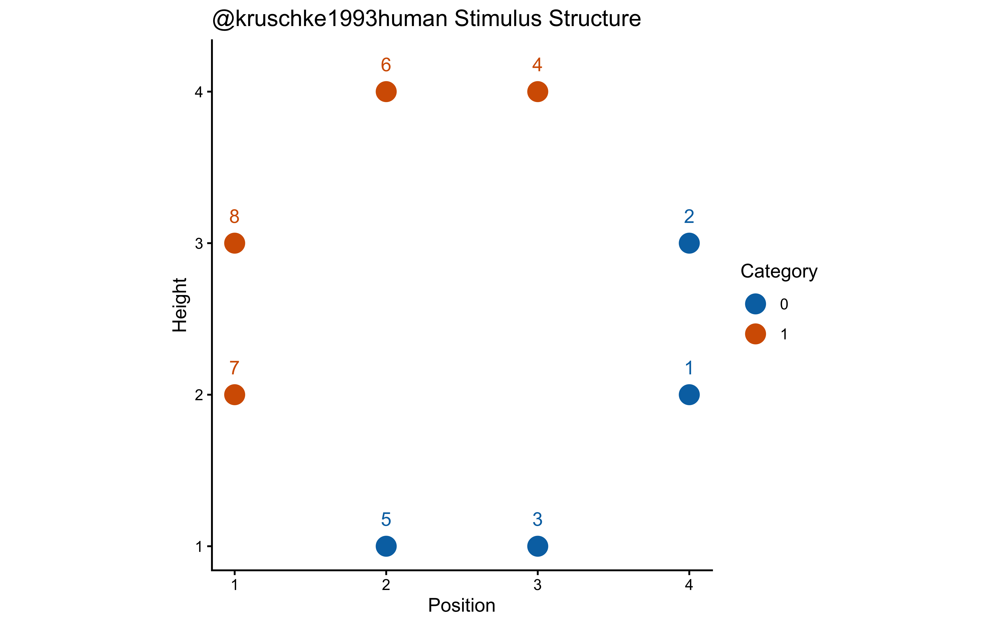
n_blocks <- 8
n_stim_per_block <- nrow(stimulus_info)
total_trials <- n_blocks * n_stim_per_block12.2.6 Per-Subject Schedule Generation
make_subject_schedule <- function(stimulus_info, n_blocks, seed) {
set.seed(seed)
n_stim <- nrow(stimulus_info)
sequence <- unlist(lapply(seq_len(n_blocks), function(b) {
sample(stimulus_info$stimulus, n_stim, replace = FALSE)
}))
tibble(
trial_within_subject = seq_along(sequence),
block = rep(seq_len(n_blocks), each = n_stim),
stimulus_id = sequence
) |>
left_join(stimulus_info, by = c("stimulus_id" = "stimulus")) |>
rename(category_feedback = category_true) |>
dplyr::select(trial_within_subject, block, stimulus_id,
height, position, category_feedback)
}12.2.7 Simulating Behavior with the GCM
simulate_gcm_agent <- function(agent_id, w_true, c_true, bias_true,
stimulus_info, n_blocks, subject_seed) {
schedule <- make_subject_schedule(stimulus_info, n_blocks, seed = subject_seed)
obs <- schedule |> dplyr::select(height, position)
feedback <- schedule$category_feedback
sim_results <- gcm_simulate(
w = w_true, c = c_true, bias = bias_true,
obs = obs, cat_feedback = feedback, quiet = TRUE
)
schedule |>
mutate(
agent_id = agent_id,
w1_true = w_true[1],
w2_true = w_true[2],
c_true = c_true,
log_c_true = log(c_true),
bias_true = bias_true,
prob_cat1 = sim_results$prob_cat1,
sim_response = sim_results$sim_response,
correct = as.integer(category_feedback == sim_response)
) |>
group_by(agent_id) |>
mutate(performance = cumsum(correct) / row_number()) |>
ungroup()
}param_grid <- expand_grid(
w_setting = list(c(0.5, 0.5), c(0.7, 0.3), c(0.9, 0.1)),
c_setting = c(0.5, 1.0, 2.0, 4.0, 5.0, 15.0),
bias_setting = 0.5
) |>
mutate(
setting_id = row_number(),
w_label = map_chr(w_setting, ~paste(round(.x, 1), collapse = ",")),
c_label = paste0("c≈", round(c_setting, 1)),
label = paste0("w=(", w_label, "), ", c_label)
)
n_agents_per_setting <- 5
simulation_plan <- param_grid |>
uncount(n_agents_per_setting) |>
mutate(agent_id = row_number())
sim_file <- here("simdata", "ch12_gcm_simulated_responses.csv")
if (regenerate_simulations || !file.exists(sim_file)) {
plan(multisession, workers = max(1, availableCores() - 1))
simulated_responses <- future_pmap_dfr(
list(
agent_id = simulation_plan$agent_id,
w_true = simulation_plan$w_setting,
c_true = simulation_plan$c_setting,
bias_true = simulation_plan$bias_setting
),
simulate_gcm_agent,
stimulus_info = stimulus_info,
n_blocks = n_blocks,
subject_seed = simulation_plan$agent_id,
.options = furrr_options(seed = TRUE)
)
plan(sequential)
write_csv(simulated_responses, sim_file)
cat("Simulation complete. Results saved.\n")
} else {
simulated_responses <- read_csv(sim_file, show_col_types = FALSE)
cat("Loaded existing simulation results.\n")
}Loaded existing simulation results.simulated_responses_labeled <- simulated_responses |>
mutate(
w_label = paste0("w=(", round(w1_true, 1), ",", round(w2_true, 1), ")"),
c_label = paste0("c≈", round(c_true, 1)),
# Order the c_label factor based on the numeric c_true values
c_label = forcats::fct_reorder(c_label, c_true)
)
p_c_effect <- ggplot(
simulated_responses_labeled,
aes(x = trial_within_subject, y = performance,
color = factor(round(c_true, 1)),
group = interaction(agent_id, round(c_true, 1)))
) +
stat_summary(fun = mean, geom = "line",
aes(group = factor(round(c_true, 1))), linewidth = 1.2) +
facet_wrap(~w_label) +
scale_color_viridis_d(option = "plasma", name = "Sensitivity (c)") +
labs(
title = "Effect of Sensitivity (c) on GCM Learning",
subtitle = "Mean across simulated agents",
x = "Trial", y = "Cumulative Accuracy"
) +
theme(legend.position = "bottom")
p_w_effect <- ggplot(
simulated_responses_labeled,
aes(x = trial_within_subject, y = performance,
color = w_label, group = interaction(agent_id, w_label))
) +
stat_summary(fun = mean, geom = "line", aes(group = w_label), linewidth = 1.2) +
facet_wrap(~c_label) +
scale_color_brewer(palette = "Set1", name = "Attention Weights") +
labs(
title = "Effect of Attention Weights (w) on GCM Learning",
subtitle = "Mean across simulated agents",
x = "Trial", y = "Cumulative Accuracy"
) +
theme(legend.position = "bottom")
p_c_effect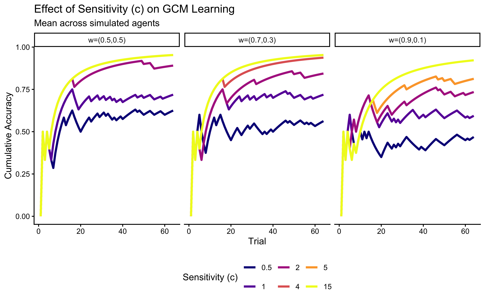
p_w_effect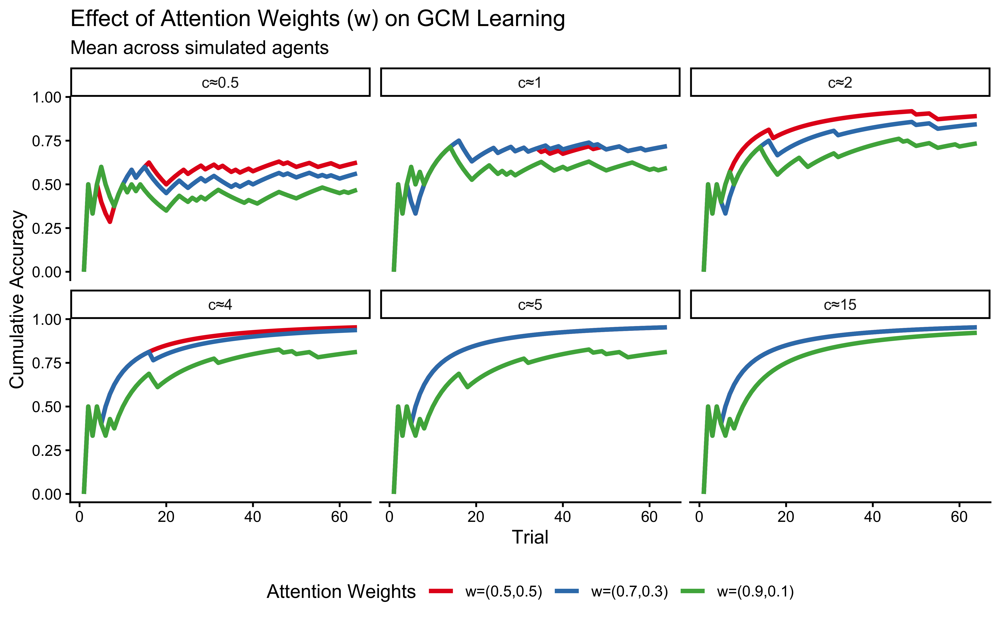
12.2.8 Prior Predictive Check
We need to define the priors for the Stan model already here:
- \(w \sim \text{Dirichlet}(1, 1)\) — uniform over the simplex
- \(\log c \sim \text{Normal}(\log(2), 1)\) — implies \(c \in (0.27, 14.8)\) at \(\pm 2\) SD
- \(\text{bias} \sim \text{Beta}(1, 1)\) — uniform over \((0, 1)\)
n_prior_samples <- 500
prior_draws <- tibble(
sample_id = seq_len(n_prior_samples),
log_c = rnorm(n_prior_samples, LOG_C_PRIOR_MEAN, LOG_C_PRIOR_SD),
w1 = runif(n_prior_samples),
bias = rbeta(n_prior_samples, 1, 1)
) |>
mutate(c_true = exp(log_c), w2 = 1 - w1)
ppc_schedule <- make_subject_schedule(stimulus_info, n_blocks, seed = 999)
prior_pred_curves <- pmap_dfr(
list(
sample_id = prior_draws$sample_id,
log_c = prior_draws$log_c,
w1 = prior_draws$w1,
bias = prior_draws$bias
),
function(sample_id, log_c, w1, bias) {
c <- exp(log_c)
sim <- gcm_simulate(
w = c(w1, 1 - w1), c = c, bias = bias,
obs = ppc_schedule |> dplyr::select(height, position),
cat_feedback = ppc_schedule$category_feedback
)
tibble(
sample_id = sample_id,
trial = seq_len(nrow(ppc_schedule)),
correct = as.integer(sim$sim_response == ppc_schedule$category_feedback)
) |>
mutate(cum_acc = cumsum(correct) / row_number())
}
)
prior_pred_summary <- prior_pred_curves |>
group_by(trial) |>
summarise(
q05 = quantile(cum_acc, 0.05),
q25 = quantile(cum_acc, 0.25),
q50 = median(cum_acc),
q75 = quantile(cum_acc, 0.75),
q95 = quantile(cum_acc, 0.95),
.groups = "drop"
)
ggplot(prior_pred_summary, aes(x = trial)) +
geom_ribbon(aes(ymin = q05, ymax = q95), fill = "#56B4E9", alpha = 0.20) +
geom_ribbon(aes(ymin = q25, ymax = q75), fill = "#56B4E9", alpha = 0.40) +
geom_line(aes(y = q50), color = "#0072B2", linewidth = 1) +
geom_hline(yintercept = 0.5, linetype = "dashed", color = "grey40") +
scale_y_continuous(limits = c(0, 1)) +
labs(
title = "Prior Predictive Check: GCM Learning Curves",
subtitle = "Ribbons: 50% and 90% prior predictive intervals; line: median\nPriors: log(c) ~ Normal(log 2, 1), w ~ Dirichlet(1,1), bias ~ Beta(1,1)",
x = "Trial", y = "Cumulative Accuracy"
)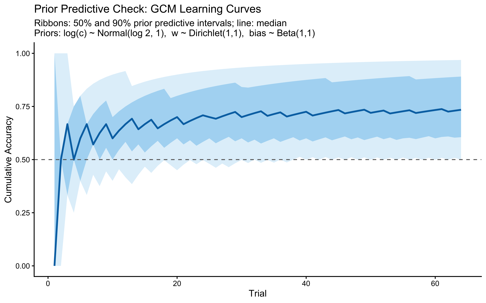
12.2.9 Implementing the GCM in Stan for Parameter Estimation
12.2.9.1 Architectural choice: prob_cat1[i] in transformed parameters
Because the GCM’s per-trial choice probability \(p_i\) is a deterministic function of the parameters \((w, c, \beta)\) and the data sequence, it belongs in transformed parameters as a single source of truth. The model{} block then becomes a one-line vectorised Bernoulli likelihood, and generated quantities{} becomes a lookup against the already-computed prob_cat1 vector.
\usetikzlibrary{bayesnet}
\begin{tikzpicture}
% ── Hyperparameters (const) ─────────────────────────────
\node[const] (alpha_w) at (0, 0) {$\boldsymbol{\alpha}_w$};
\node[const] (hyp_c) at (4, 0) {$\mu_c,\,\sigma_c$};
\node[const] (hyp_b) at (8, 0) {$\alpha_\beta,\,\beta_\beta$};
% ── Latent parameters ───────────────────────────────────
\node[latent] (w) at (0, -2) {$\mathbf{w}$};
\node[latent] (logc) at (4, -2) {$\log c$};
\node[latent] (bias) at (8, -2) {$\beta$};
% ── Trial-level nodes (inside plate) ────────────────────
\node[obs] (xi) at (2, -4.5) {$\mathbf{x}_i$};
\node[obs] (zi) at (4, -4.5) {$z_{<i}$};
\node[det] (pi) at (6, -4.5) {$p_i$};
\node[obs] (yi) at (6, -6.5) {$y_i$};
% ── Edges ───────────────────────────────────────────────
\edge {alpha_w} {w};
\edge {hyp_c} {logc};
\edge {hyp_b} {bias};
\edge {w, logc, bias} {pi};
\edge {xi, zi} {pi};
\edge {pi} {yi};
% ── Plate ───────────────────────────────────────────────
\plate {trial} {(xi)(zi)(pi)(yi)} {$N$ trials};
\end{tikzpicture}
The generative relationships for the Single-Subject GCM are: \[ \begin{aligned} \mathbf{w} &\sim \text{Dirichlet}(\boldsymbol{\alpha}_w) \\ \log c &\sim \text{Normal}(\mu_c, \sigma_c) \\ \beta &\sim \text{Beta}(\alpha_\beta, \beta_\beta) \\ d_{ie} &= \sum_f w_f |x_{if} - x_{ef}| \\ s_{ie} &= \exp(-c \cdot d_{ie}) \\ m_{k,i} &= \frac{1}{n_{k,i}} \sum_{e \in C_k} s_{ie} \quad \text{for } k \in \{0, 1\} \\ p_i &= \frac{\beta \cdot m_{1,i}}{\beta \cdot m_{1,i} + (1 - \beta) \cdot m_{0,i}} \\ y_i &\sim \text{Bernoulli}(p_i) \end{aligned} \]
gcm_single_stan <- "
// Generalized Context Model — Single Subject (refactored architecture)
//
// Key design:
// prob_cat1[i] is the per-trial choice probability. It is deterministic
// given (w, log_c, bias) and the data sequence, so it lives in
// transformed parameters. model{} reads it once via bernoulli_lpmf.
// generated quantities{} reads the same vector for log_lik[i].
//
// Parameterization:
// w : attention weights (simplex)
// log_c : log sensitivity (unconstrained); c = exp(log_c)
// bias : response bias towards category 1 (0–1)
data {
int<lower=1> ntrials;
int<lower=1> nfeatures;
array[ntrials] int<lower=0, upper=1> y;
array[ntrials, nfeatures] real obs;
array[ntrials] int<lower=0, upper=1> cat_feedback;
vector[nfeatures] w_prior_alpha;
real log_c_prior_mean;
real<lower=0> log_c_prior_sd;
real<lower=0> bias_prior_alpha;
real<lower=0> bias_prior_beta;
}
transformed data {
array[ntrials, ntrials, nfeatures] real abs_diff;
for (i in 1:ntrials) {
for (j in 1:ntrials) {
for (f in 1:nfeatures) {
abs_diff[i, j, f] = abs(obs[i, f] - obs[j, f]);
}
}
}
}
parameters {
simplex[nfeatures] w;
real log_c;
real<lower=0, upper=1> bias;
}
transformed parameters {
real<lower=0> c = exp(log_c);
vector<lower=1e-9, upper=1-1e-9>[ntrials] prob_cat1;
{
array[ntrials] int memory_trial_idx;
array[ntrials] int memory_cat;
int n_mem = 0;
for (i in 1:ntrials) {
real p_i;
int has_cat0 = 0;
int has_cat1 = 0;
for (k in 1:n_mem) {
if (memory_cat[k] == 0) has_cat0 = 1;
if (memory_cat[k] == 1) has_cat1 = 1;
}
if (n_mem == 0 || has_cat0 == 0 || has_cat1 == 0) {
p_i = bias;
} else {
real s1 = 0;
real s0 = 0;
int n1 = 0;
int n0 = 0;
for (e in 1:n_mem) {
real d = 0;
int past_i = memory_trial_idx[e];
for (f in 1:nfeatures)
d += w[f] * abs_diff[i, past_i, f];
real sim = exp(-c * d);
if (memory_cat[e] == 1) { s1 += sim; n1 += 1; }
else { s0 += sim; n0 += 1; }
}
// Mean similarity per category (n1, n0 > 0 here).
real m1 = s1 / n1;
real m0 = s0 / n0;
real num = bias * m1;
real den = num + (1 - bias) * m0;
p_i = (den > 1e-9) ? num / den : bias;
}
prob_cat1[i] = fmax(1e-9, fmin(1 - 1e-9, p_i));
n_mem += 1;
memory_trial_idx[n_mem] = i;
memory_cat[n_mem] = cat_feedback[i];
}
}
}
model {
target += dirichlet_lpdf(w | w_prior_alpha);
target += normal_lpdf(log_c | log_c_prior_mean, log_c_prior_sd);
target += beta_lpdf(bias | bias_prior_alpha, bias_prior_beta);
target += bernoulli_lpmf(y | prob_cat1);
}
generated quantities {
vector[ntrials] log_lik;
real lprior;
for (i in 1:ntrials)
log_lik[i] = bernoulli_lpmf(y[i] | prob_cat1[i]);
lprior = dirichlet_lpdf(w | w_prior_alpha) +
normal_lpdf(log_c | log_c_prior_mean, log_c_prior_sd) +
beta_lpdf(bias | bias_prior_alpha, bias_prior_beta);
}
"
stan_file_gcm_single <- "stan/ch12_gcm_single.stan"
write_stan_file(gcm_single_stan, dir = "stan/", basename = "ch12_gcm_single.stan")[1] "/Users/au209589/Dropbox/Teaching/AdvancedCognitiveModeling23_book/stan/ch12_gcm_single.stan"mod_gcm_single <- cmdstan_model(stan_file_gcm_single)12.2.9.2 What each block does:
transformed data: Builds theabs_diff[i, j, f]tensor. Evaluated exactly once per chain.parameters:simplex[nfeatures] w, unconstrainedreal log_c, andreal<lower=0, upper=1> bias.transformed parameters: Cachesprob_cat1[i]in a single forward pass over trials.model: Priors followed by a vectorised one-line likelihood.generated quantities:log_lik[i]as a per-trial lookup, andlpriorforpriorsense.
A note on reduce_sum and parallelization: The GCM’s inner loop cannot be parallelized with reduce_sum because trial \(t\)’s contribution to target depends on the memory state accumulated sequentially from trials \(1, \ldots, t-1\).
12.2.9.3 Fitting the Single-Subject GCM
# Select one simulated agent: w ≈ (0.9, 0.1), c ≈ 2
agent_to_fit <- simulated_responses |>
filter(
round(w1_true, 1) == 0.9,
abs(log_c_true - log(2.0)) == min(abs(log_c_true - log(2.0)))
) |>
filter(agent_id == min(agent_id)) |>
slice(1:total_trials)
stopifnot(nrow(agent_to_fit) == total_trials)
gcm_data_single <- list(
ntrials = nrow(agent_to_fit),
nfeatures = 2,
y = agent_to_fit$sim_response,
obs = as.matrix(agent_to_fit[, c("height", "position")]),
cat_feedback = agent_to_fit$category_feedback,
w_prior_alpha = c(1, 1),
log_c_prior_mean = LOG_C_PRIOR_MEAN,
log_c_prior_sd = LOG_C_PRIOR_SD,
bias_prior_alpha = 1,
bias_prior_beta = 1
)
fit_filepath_single <- here("simmodels", "ch12_gcm_single_fit.rds")
if (regenerate_simulations || !file.exists(fit_filepath_single)) {
pf_single <- tryCatch(
mod_gcm_single$pathfinder(
data = gcm_data_single,
seed = 123,
num_paths = 4,
refresh = 0
),
error = function(e) {
message("Pathfinder failed — falling back to default initialisation.")
NULL
}
)
fit_gcm_single <- mod_gcm_single$sample(
data = gcm_data_single,
init = pf_single,
seed = 123,
chains = 4,
parallel_chains = min(4, availableCores()),
iter_warmup = 1000,
iter_sampling = 1500,
refresh = 300,
adapt_delta = 0.9
)
fit_gcm_single$save_object(fit_filepath_single)
cat("Single-agent model fitted and saved.\n")
} else {
fit_gcm_single <- readRDS(fit_filepath_single)
cat("Loaded existing single-agent fit.\n")
}Loaded existing single-agent fit.12.2.9.4 MCMC Diagnostic Battery
if (!is.null(fit_gcm_single)) {
diag_tbl <- diagnostic_summary_table(
fit_gcm_single,
params = c("w[1]", "w[2]", "log_c", "c", "bias")
)
print(diag_tbl)
if (!all(diag_tbl$pass)) {
warning("Diagnostic battery has failures — interpret posteriors with caution.")
}
bayesplot::mcmc_trace(
fit_gcm_single$draws(c("log_c", "w[1]", "bias")),
facet_args = list(ncol = 1)
)
bayesplot::mcmc_rank_overlay(
fit_gcm_single$draws(c("log_c", "w[1]", "bias"))
)
}# A tibble: 6 × 4
metric value threshold pass
<chr> <dbl> <chr> <lgl>
1 Divergences (zero tolerance) 0 == 0 TRUE
2 Max rank-normalised R-hat 1.00 < 1.01 TRUE
3 Min bulk ESS 2403. > 400 TRUE
4 Min tail ESS 1853. > 400 TRUE
5 Min E-BFMI 0.898 > 0.2 TRUE
6 Max MCSE / posterior SD 0.0172 < 0.05 TRUE 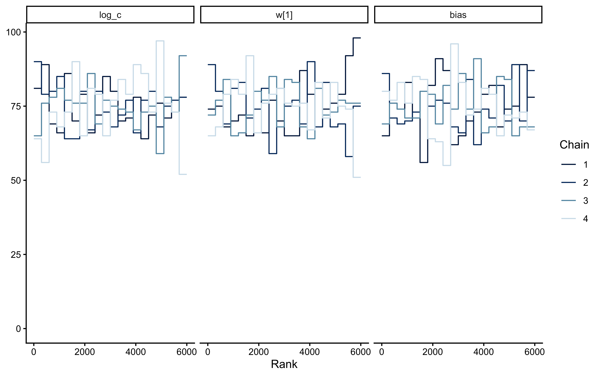
12.2.9.5 Posterior Predictive Check (single subject)
if (!is.null(fit_gcm_single)) {
prob_draws <- fit_gcm_single$draws("prob_cat1", format = "matrix")
n_draws <- nrow(prob_draws)
n_trials <- ncol(prob_draws)
set.seed(2025)
yrep_post <- matrix(rbinom(n_draws * n_trials, 1, as.vector(prob_draws)),
nrow = n_draws)
obs_acc <- cummean(agent_to_fit$sim_response == agent_to_fit$category_feedback)
rep_acc <- t(apply(yrep_post, 1, function(yr) {
cummean(yr == agent_to_fit$category_feedback)
}))
ppc_summary <- tibble(
trial = seq_len(n_trials),
obs = obs_acc,
q05 = apply(rep_acc, 2, quantile, 0.05),
q25 = apply(rep_acc, 2, quantile, 0.25),
q50 = apply(rep_acc, 2, quantile, 0.50),
q75 = apply(rep_acc, 2, quantile, 0.75),
q95 = apply(rep_acc, 2, quantile, 0.95)
)
ggplot(ppc_summary, aes(x = trial)) +
geom_ribbon(aes(ymin = q05, ymax = q95), fill = "#56B4E9", alpha = 0.20) +
geom_ribbon(aes(ymin = q25, ymax = q75), fill = "#56B4E9", alpha = 0.40) +
geom_line(aes(y = q50), color = "#0072B2", linewidth = 0.8) +
geom_line(aes(y = obs), color = "#D55E00", linewidth = 1) +
scale_y_continuous(limits = c(0, 1)) +
labs(
title = "Posterior Predictive Check: Cumulative Accuracy",
subtitle = "Blue ribbons: 50% and 90% posterior predictive intervals\nOrange line: observed cumulative accuracy",
x = "Trial", y = "Cumulative Accuracy"
)
}
12.2.9.6 Prior–Posterior Update Plot
if (!is.null(fit_gcm_single)) {
draws_df <- as_draws_df(
fit_gcm_single$draws(variables = c("w[1]", "log_c", "c", "bias"))
)
true_w1 <- agent_to_fit$w1_true[1]
true_log_c <- agent_to_fit$log_c_true[1]
true_c <- agent_to_fit$c_true[1]
true_bias <- agent_to_fit$bias_true[1]
set.seed(2026)
n_prior <- 4000
prior_df <- tibble(
`w[1]` = runif(n_prior),
log_c = rnorm(n_prior, LOG_C_PRIOR_MEAN, LOG_C_PRIOR_SD),
c = exp(log_c),
bias = rbeta(n_prior, 1, 1)
)
pp_panel <- function(prior_x, post_x, true_val, label) {
tibble(
x = c(prior_x, post_x),
source = c(rep("Prior", length(prior_x)),
rep("Posterior", length(post_x)))
) |>
ggplot(aes(x = x, fill = source, color = source)) +
geom_density(alpha = 0.4, linewidth = 0.5) +
geom_vline(xintercept = true_val, color = "red",
linetype = "dashed", linewidth = 0.7) +
scale_fill_manual(values = c(Prior = "grey60", Posterior = "#0072B2")) +
scale_color_manual(values = c(Prior = "grey40", Posterior = "#0072B2")) +
labs(title = label, x = NULL, y = "Density") +
theme(legend.position = "bottom")
}
p1 <- pp_panel(prior_df$`w[1]`, draws_df$`w[1]`, true_w1, "w[1]")
p2 <- pp_panel(prior_df$log_c, draws_df$log_c, true_log_c, "log(c) — computational scale")
p3 <- pp_panel(prior_df$c, draws_df$c, true_c, "c — natural scale")
p4 <- pp_panel(prior_df$bias, draws_df$bias, true_bias, "bias")
(p1 | p2) / (p3 | p4) +
plot_annotation(
title = "Prior–Posterior Update for the Single-Subject GCM",
subtitle = "Red dashed line = true generating value"
)
}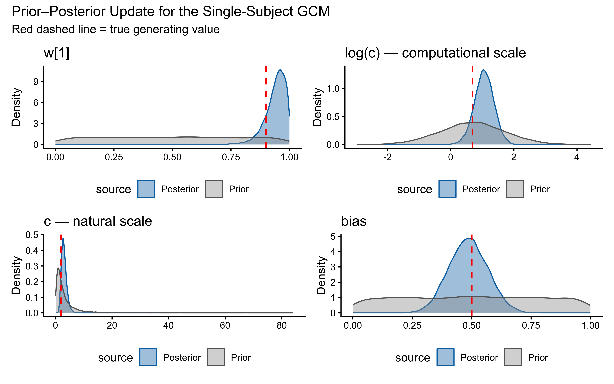
12.2.9.7 Joint Posterior Geometry: \(c\) vs \(w\)
if (!is.null(fit_gcm_single)) {
bayesplot::mcmc_pairs(
fit_gcm_single$draws(c("log_c", "w[1]", "bias")),
diag_fun = "dens",
off_diag_fun = "hex"
)
}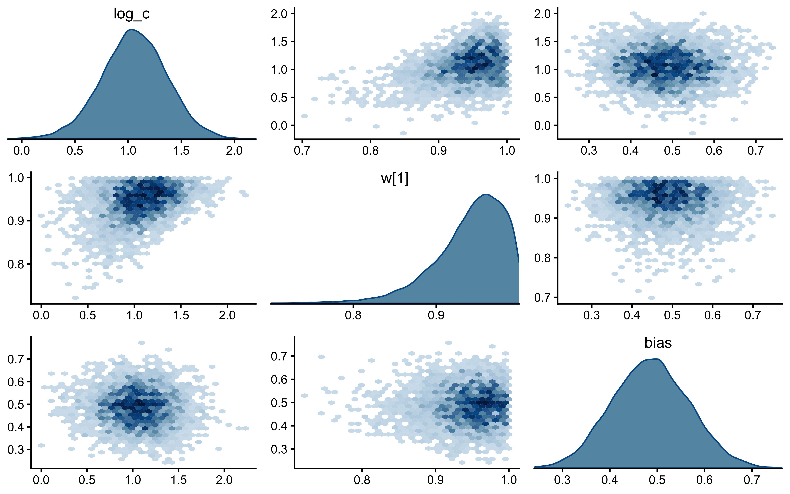
12.2.9.8 LOO with Pareto-\(\hat{k}\) Diagnostics
Standard PSIS-LOO is computed for completeness and for comparison against LFO-CV below. We do not interpret it as a valid measure of out-of-sample predictive accuracy for a sequential model — see the next subsection for why — but the Pareto-\(\hat{k}\) diagnostic still localises trials where the path-dependence concern bites hardest.
if (!is.null(fit_gcm_single)) {
log_lik_mat <- fit_gcm_single$draws("log_lik", format = "matrix")
loo_gcm_single <- loo::loo(log_lik_mat, cores = 4)
print(loo_gcm_single)
plot(loo_gcm_single, label_points = TRUE,
main = "PSIS-LOO Pareto-k diagnostics: Single-subject GCM")
}
Computed from 6000 by 64 log-likelihood matrix.
Estimate SE
elpd_loo -27.5 3.7
p_loo 2.5 0.9
looic 54.9 7.4
------
MCSE of elpd_loo is 0.0.
MCSE and ESS estimates assume independent draws (r_eff=1).
All Pareto k estimates are good (k < 0.7).
See help('pareto-k-diagnostic') for details.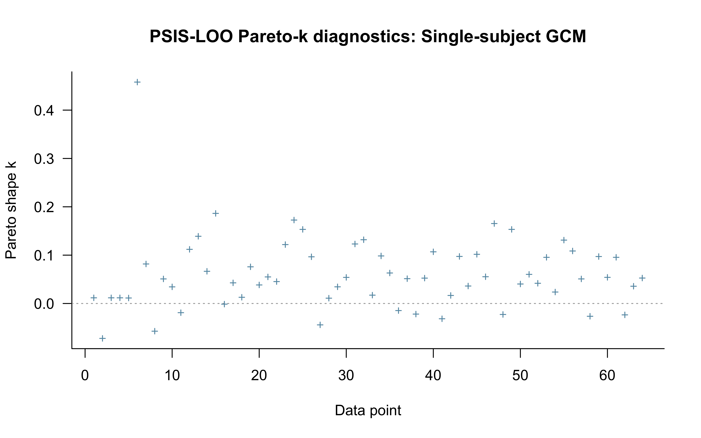
12.2.9.9 Leave-Future-Out Cross-Validation
Why standard LOO is invalid here. Standard PSIS-LOO assumes observations are conditionally exchangeable given the parameters. In the GCM, this assumption is violated: leaving out observation \(t\) also conceptually removes the memory trace that observation \(t\) contributed to trials \(t+1, \ldots, T\).
What LFO-CV does instead. LFO-CV (Bürkner, Gabry, & Vehtari, 2020) estimates the one-step-ahead predictive density. The PSIS approximation refits only when the importance sampling deteriorates (\(\hat{k} > k_\text{thresh}\)) and uses importance reweighting otherwise.
# ─────────────────────────────────────────────────────────────────────────────
# psis_lfo_gcm: PSIS-approximated leave-future-out CV for the GCM.
# Follows Bürkner, Gabry, & Vehtari (2020), Algorithm 1.
# ─────────────────────────────────────────────────────────────────────────────
psis_lfo_gcm <- function(stan_model,
full_data,
L = 16,
k_thresh = 0.7,
seed = 1,
verbose = FALSE) {
fit_subset <- function(n_train, seed) {
sub_data <- full_data
sub_data$ntrials <- n_train
sub_data$y <- sub_data$y[1:n_train]
sub_data$obs <- sub_data$obs[1:n_train, , drop = FALSE]
sub_data$cat_feedback <- sub_data$cat_feedback[1:n_train]
pf <- stan_model$pathfinder(data = sub_data, num_paths = 4, refresh = 0,
seed = seed)
fit <- stan_model$sample(
data = sub_data, init = pf, seed = seed,
chains = 2, parallel_chains = 2,
iter_warmup = 600, iter_sampling = 800,
refresh = 0, adapt_delta = 0.9
)
fit
}
predict_future <- function(fit, full_data) {
full_n <- length(full_data$y)
ext_data <- full_data
ext_data$ntrials <- full_n
gq_fit <- stan_model$generate_quantities(
fitted_params = fit,
data = ext_data,
seed = seed,
parallel_chains = 2
)
gq_fit$draws("log_lik", format = "matrix")
}
T_total <- length(full_data$y)
elpd_lfo <- numeric(T_total)
elpd_lfo[] <- NA_real_
refits <- integer(0)
k_history <- numeric(0)
fit_curr <- fit_subset(L, seed = seed)
ll_full_curr <- predict_future(fit_curr, full_data)
refits <- c(refits, L)
last_fit_n <- L
n_draws <- nrow(ll_full_curr)
ll_train_curr <- rowSums(ll_full_curr[, 1:L, drop = FALSE])
for (t in (L + 1):T_total) {
if (t - 1 == last_fit_n) {
k_t <- 0
k_history[t] <- k_t
lw <- rep(-log(n_draws), n_draws)
} else {
ll_train_target <- rowSums(ll_full_curr[, 1:(t - 1), drop = FALSE])
log_w <- ll_train_target - ll_train_curr
psis_obj <- loo::psis(log_w, r_eff = NA)
k_t <- loo::pareto_k_values(psis_obj)
k_history[t] <- k_t
if (k_t > k_thresh) {
if (verbose) cat("Refit at t =", t, "(k =", round(k_t, 3), ")\n")
fit_curr <- fit_subset(t - 1, seed = seed + t)
ll_full_curr <- predict_future(fit_curr, full_data)
ll_train_curr <- rowSums(ll_full_curr[, 1:(t - 1), drop = FALSE])
last_fit_n <- t - 1
refits <- c(refits, last_fit_n)
lw <- rep(-log(n_draws), n_draws)
} else {
lw <- as.numeric(weights(psis_obj))
}
}
lp <- ll_full_curr[, t]
elpd_lfo[t] <- matrixStats::logSumExp(lw + lp)
}
list(
elpd_lfo = sum(elpd_lfo, na.rm = TRUE),
elpd_pointwise = elpd_lfo,
refits = refits,
k_history = k_history,
L = L
)
}
lfo_filepath <- here("simdata", "ch12_lfo_single.rds")
if (regenerate_simulations || !file.exists(lfo_filepath)) {
lfo_single <- psis_lfo_gcm(
stan_model = mod_gcm_single,
full_data = gcm_data_single,
L = 16,
k_thresh = 0.7,
seed = 11,
verbose = TRUE
)
saveRDS(lfo_single, lfo_filepath)
} else {
lfo_single <- readRDS(lfo_filepath)
}
cat("LFO-CV ELPD (single subject):", round(lfo_single$elpd_lfo, 2), "\n")LFO-CV ELPD (single subject): -19.9 cat("Number of refits:", length(lfo_single$refits), "\n")Number of refits: 1 cat("Refit triggered at trials:", lfo_single$refits, "\n")Refit triggered at trials: 16 if (!is.null(fit_gcm_single)) {
loo_pw <- loo_gcm_single$pointwise[, "elpd_loo"]
comp_df <- tibble(
trial = seq_along(loo_pw),
elpd_loo = loo_pw,
elpd_lfo = lfo_single$elpd_pointwise
) |>
pivot_longer(starts_with("elpd_"), names_to = "method", values_to = "elpd")
ggplot(comp_df, aes(x = trial, y = elpd, color = method)) +
geom_line(alpha = 0.7) +
geom_point(alpha = 0.5) +
scale_color_manual(values = c(elpd_loo = "#0072B2", elpd_lfo = "#D55E00"),
labels = c("PSIS-LFO (correct)",
"PSIS-LOO (invalid for sequential)")) +
labs(
title = "Per-trial ELPD: LOO vs LFO-CV",
subtitle = "Differences are largest where the path-dependence assumption fails most",
x = "Trial", y = "Pointwise ELPD"
) +
theme(legend.position = "bottom")
}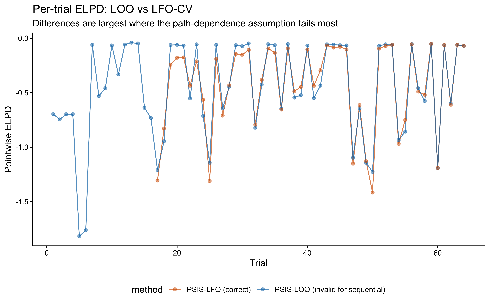
Validation against exact one-step-ahead refits.
exact_lfo_grid <- seq(16, length(gcm_data_single$y) - 1, by = 8)
exact_lfo_filepath <- here("simdata", "ch12_exact_lfo_single.rds")
if (regenerate_simulations || !file.exists(exact_lfo_filepath)) {
exact_results <- map_dfr(exact_lfo_grid, function(n_train) {
sub_data <- gcm_data_single
sub_data$ntrials <- n_train
sub_data$y <- sub_data$y[1:n_train]
sub_data$obs <- sub_data$obs[1:n_train, , drop = FALSE]
sub_data$cat_feedback <- sub_data$cat_feedback[1:n_train]
pf <- mod_gcm_single$pathfinder(data = sub_data, num_paths = 4,
refresh = 0, seed = n_train)
fit <- mod_gcm_single$sample(
data = sub_data, init = pf, seed = n_train,
chains = 2, parallel_chains = 2,
iter_warmup = 600, iter_sampling = 800,
refresh = 0, adapt_delta = 0.9
)
ext <- gcm_data_single
gq <- mod_gcm_single$generate_quantities(
fitted_params = fit, data = ext, seed = n_train, parallel_chains = 2
)
ll_target <- gq$draws("log_lik", format = "matrix")[, n_train + 1]
elpd_exact <- matrixStats::logSumExp(ll_target) - log(length(ll_target))
tibble(trial = n_train + 1, elpd_exact = elpd_exact)
})
saveRDS(exact_results, exact_lfo_filepath)
} else {
exact_results <- readRDS(exact_lfo_filepath)
}
psis_at_grid <- tibble(
trial = exact_results$trial,
elpd_psis = lfo_single$elpd_pointwise[exact_results$trial]
)
agreement_df <- exact_results |>
left_join(psis_at_grid, by = "trial")
ggplot(agreement_df, aes(x = elpd_exact, y = elpd_psis)) +
geom_abline(intercept = 0, slope = 1, color = "red", linetype = "dashed") +
geom_point(size = 3, color = "#0072B2") +
labs(
title = "PSIS-LFO vs Exact One-Step-Ahead Refits",
subtitle = "Points should fall on the y = x line if PSIS-LFO is calibrated",
x = "Exact ELPD (refit per point)",
y = "PSIS-LFO ELPD"
) +
coord_fixed()
12.2.9.10 Randomised LOO-PIT
if (!is.null(fit_gcm_single)) {
prob_draws <- fit_gcm_single$draws("prob_cat1", format = "matrix")
log_lik_mat <- fit_gcm_single$draws("log_lik", format = "matrix")
psis_obj <- loo::psis(-log_lik_mat, r_eff = NA)
lw <- weights(psis_obj, normalize = TRUE)
y_obs <- gcm_data_single$y
loo_p_cat1 <- vapply(seq_along(y_obs), function(t) {
w <- exp(lw[, t] - matrixStats::logSumExp(lw[, t]))
sum(w * prob_draws[, t])
}, numeric(1))
set.seed(2027)
pit_vals <- ifelse(
y_obs == 1,
runif(length(y_obs), 1 - loo_p_cat1, 1),
runif(length(y_obs), 0, 1 - loo_p_cat1)
)
ggplot(tibble(pit = pit_vals), aes(x = pit)) +
geom_histogram(aes(y = after_stat(density)),
bins = 20, fill = "#0072B2", alpha = 0.7,
boundary = 0) +
geom_hline(yintercept = 1, color = "red", linetype = "dashed") +
scale_x_continuous(limits = c(0, 1)) +
labs(
title = "Randomised LOO-PIT for the Single-Subject GCM",
subtitle = "If the model is calibrated, PIT values are Uniform(0,1) (red dashed line)",
x = "Randomised LOO-PIT", y = "Density"
)
}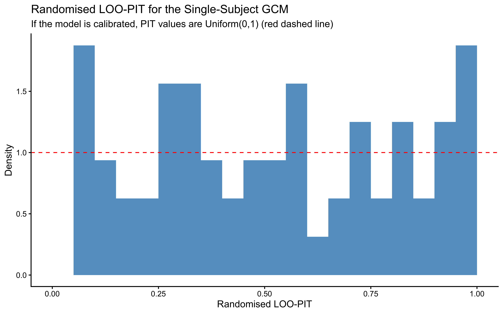
12.2.9.11 Prior Sensitivity Analysis
if (!is.null(fit_gcm_single)) {
ps <- priorsense::powerscale_sensitivity(fit_gcm_single)
print(ps)
priorsense::powerscale_plot_dens(
fit_gcm_single,
variables = c("log_c", "w[1]", "bias")
)
}Sensitivity based on cjs_dist
Prior selection: all priors
Likelihood selection: all data
variable prior likelihood diagnosis
w[1] 0.010 0.227 -
w[2] 0.010 0.227 -
log_c 0.020 0.116 -
bias 0.001 0.082 -
c 0.031 0.078 -
prob_cat1[1] 0.001 0.082 -
prob_cat1[2] 0.001 0.082 -
prob_cat1[3] 0.001 0.082 -
prob_cat1[4] 0.001 0.082 -
prob_cat1[5] 0.019 0.177 -
prob_cat1[6] 0.018 0.227 -
prob_cat1[7] 0.021 0.294 -
prob_cat1[8] 0.017 0.170 -
prob_cat1[9] 0.002 0.095 -
prob_cat1[10] 0.020 0.261 -
prob_cat1[11] 0.002 0.072 -
prob_cat1[12] 0.021 0.311 -
prob_cat1[13] 0.021 0.313 -
prob_cat1[14] 0.021 0.320 -
prob_cat1[15] 0.002 0.115 -
prob_cat1[16] 0.004 0.097 -
prob_cat1[17] 0.001 0.084 -
prob_cat1[18] 0.004 0.082 -
prob_cat1[19] 0.020 0.273 -
prob_cat1[20] 0.020 0.269 -
prob_cat1[21] 0.020 0.283 -
prob_cat1[22] 0.003 0.106 -
prob_cat1[23] 0.021 0.312 -
prob_cat1[24] 0.003 0.100 -
prob_cat1[25] 0.002 0.095 -
prob_cat1[26] 0.021 0.300 -
prob_cat1[27] 0.004 0.088 -
prob_cat1[28] 0.001 0.086 -
prob_cat1[29] 0.020 0.267 -
prob_cat1[30] 0.020 0.278 -
prob_cat1[31] 0.021 0.298 -
prob_cat1[32] 0.003 0.096 -
prob_cat1[33] 0.001 0.084 -
prob_cat1[34] 0.020 0.281 -
prob_cat1[35] 0.020 0.291 -
prob_cat1[36] 0.003 0.095 -
prob_cat1[37] 0.020 0.284 -
prob_cat1[38] 0.006 0.076 -
prob_cat1[39] 0.003 0.103 -
prob_cat1[40] 0.020 0.292 -
prob_cat1[41] 0.005 0.079 -
prob_cat1[42] 0.001 0.085 -
prob_cat1[43] 0.020 0.280 -
prob_cat1[44] 0.020 0.272 -
prob_cat1[45] 0.020 0.295 -
prob_cat1[46] 0.020 0.285 -
prob_cat1[47] 0.003 0.098 -
prob_cat1[48] 0.003 0.093 -
prob_cat1[49] 0.002 0.095 -
prob_cat1[50] 0.001 0.082 -
prob_cat1[51] 0.020 0.283 -
prob_cat1[52] 0.020 0.278 -
prob_cat1[53] 0.020 0.300 -
prob_cat1[54] 0.005 0.082 -
prob_cat1[55] 0.003 0.094 -
prob_cat1[56] 0.020 0.283 -
prob_cat1[57] 0.002 0.095 -
prob_cat1[58] 0.005 0.082 -
prob_cat1[59] 0.021 0.286 -
prob_cat1[60] 0.001 0.085 -
prob_cat1[61] 0.020 0.295 -
prob_cat1[62] 0.004 0.090 -
prob_cat1[63] 0.020 0.272 -
prob_cat1[64] 0.020 0.281 -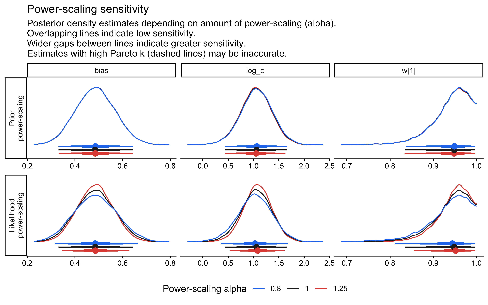
12.2.10 Single-Subject Simulation-Based Calibration (SBC)
SBC checks the internal consistency and calibration of the entire Bayesian inference procedure across the whole prior. It asks: “If the true parameters really came from our specified priors, would our inference procedure produce posteriors that are statistically consistent with those priors?”
sbc_single_filepath <- here("simdata", "ch12_sbc_single_results.rds")
if (regenerate_simulations || !file.exists(sbc_single_filepath)) {
n_sbc_iterations_single <- 500 # use >= 1000 for publication-quality SBC
gcm_single_sbc_generator <- SBC_generator_function(
function() {
w_true <- as.numeric(MCMCpack::rdirichlet(1, c(1, 1)))
log_c_true <- rnorm(1, LOG_C_PRIOR_MEAN, LOG_C_PRIOR_SD)
c_true <- exp(log_c_true)
bias_true <- rbeta(1, 1, 1)
sbc_schedule <- make_subject_schedule(stimulus_info, n_blocks,
seed = sample.int(1e8, 1))
sim <- gcm_simulate(
w = w_true,
c = c_true,
bias = bias_true,
obs = sbc_schedule |> dplyr::select(height, position),
cat_feedback = sbc_schedule$category_feedback
)
list(
variables = list(
`w[1]` = w_true[1],
`w[2]` = w_true[2],
log_c = log_c_true,
bias = bias_true
),
generated = list(
ntrials = nrow(sbc_schedule),
nfeatures = 2L,
y = as.integer(sim$sim_response),
obs = as.matrix(sbc_schedule[, c("height", "position")]),
cat_feedback = as.integer(sbc_schedule$category_feedback),
w_prior_alpha = c(1, 1),
log_c_prior_mean = LOG_C_PRIOR_MEAN,
log_c_prior_sd = LOG_C_PRIOR_SD,
bias_prior_alpha = 1,
bias_prior_beta = 1
)
)
}
)
gcm_single_sbc_backend <- SBC_backend_cmdstan_sample(
mod_gcm_single,
iter_warmup = 1000,
iter_sampling = 1000,
chains = 2,
adapt_delta = 0.9,
refresh = 0
)
gcm_single_datasets <- generate_datasets(
gcm_single_sbc_generator,
n_sims = n_sbc_iterations_single
)
sbc_results_single <- compute_SBC(
gcm_single_datasets,
gcm_single_sbc_backend,
cache_mode = "results",
cache_location = here("simdata", "ch12_sbc_single_cache"),
keep_fits = FALSE
)
saveRDS(sbc_results_single, sbc_single_filepath)
cat("SBC single-subject results computed and saved.\n")
} else {
sbc_results_single <- readRDS(sbc_single_filepath)
cat("Loaded existing SBC single-subject results.\n")
}Loaded existing SBC single-subject results.plot_ecdf_diff(sbc_results_single)
plot_rank_hist(sbc_results_single)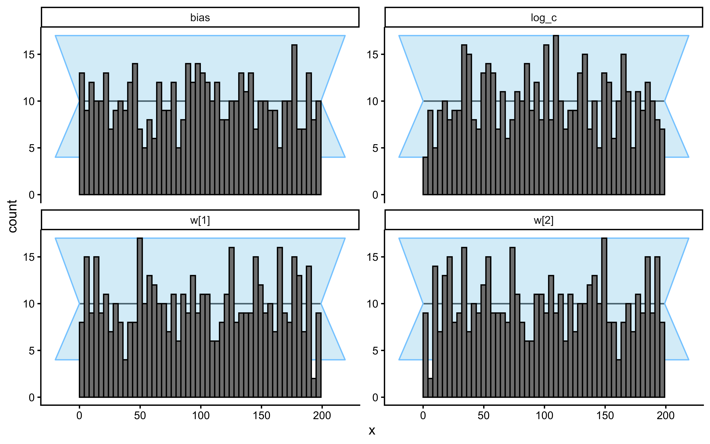
# ── Diagnostic issue investigation ───────────────────────────────────────────
backend_diags <- sbc_results_single$backend_diagnostics
default_diags <- sbc_results_single$default_diagnostics |>
dplyr::select(sim_id, max_rhat, min_ess_to_rank)
true_params_wide <- sbc_results_single$stats |>
dplyr::select(sim_id, variable, simulated_value) |>
tidyr::pivot_wider(names_from = variable, values_from = simulated_value)
diag_df <- backend_diags |>
dplyr::left_join(default_diags, by = "sim_id") |>
dplyr::left_join(true_params_wide, by = "sim_id") |>
dplyr::mutate(has_issue = n_divergent > 0 | n_max_treedepth > 0 | max_rhat > 1.01)
p_diag_c_bias <- ggplot(diag_df, aes(x = log_c, y = bias, color = has_issue)) +
geom_point(alpha = 0.7, size = 2) +
scale_color_manual(values = c("FALSE" = "#0072B2", "TRUE" = "#D55E00")) +
labs(title = "Diagnostic Issues in Parameter Space",
subtitle = "Orange points: divergence, max treedepth, or Rhat > 1.01",
x = "True log(c)", y = "True Bias") +
theme(legend.position = "bottom")
p_diag_w_c <- ggplot(diag_df, aes(x = `w[1]`, y = log_c, color = has_issue)) +
geom_point(alpha = 0.7, size = 2) +
scale_color_manual(values = c("FALSE" = "#0072B2", "TRUE" = "#D55E00")) +
labs(title = "Attention vs Sensitivity", x = "True w[1]", y = "True log(c)") +
theme(legend.position = "none")
print(p_diag_c_bias | p_diag_w_c)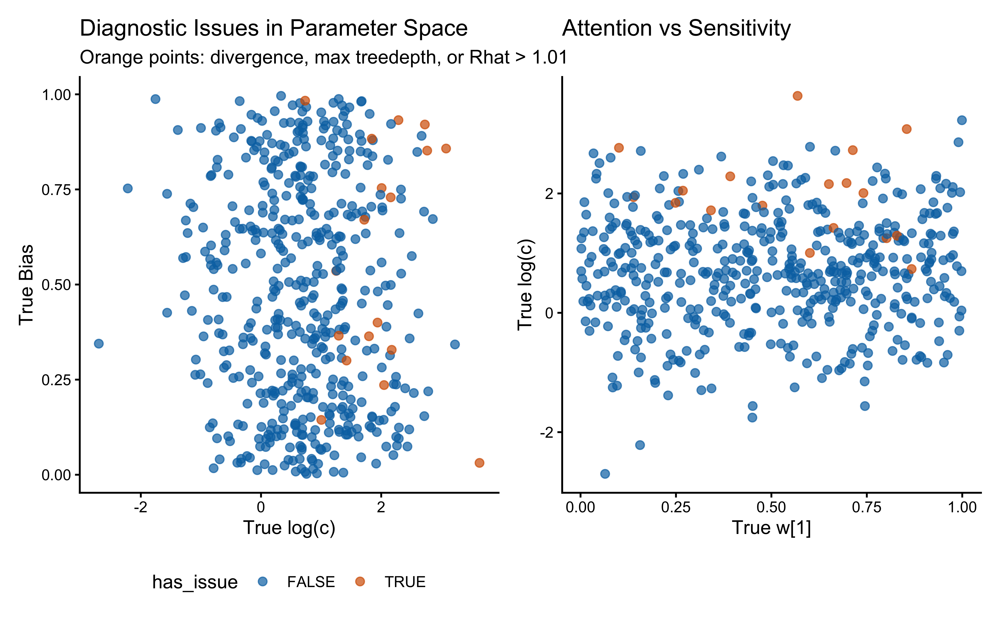
# ── Parameter recovery on SBC simulations ────────────────────────────────────
recovery_df <- sbc_results_single$stats
p_sbc_recovery <- ggplot(recovery_df, aes(x = simulated_value, y = mean)) +
geom_point(alpha = 0.4, color = "#0072B2") +
geom_abline(intercept = 0, slope = 1, color = "red", linetype = "dashed") +
facet_wrap(~variable, scales = "free") +
labs(
title = "Parameter Recovery Across SBC Simulations",
subtitle = "Posterior mean vs True generated value",
x = "True Value (simulated_value)",
y = "Estimated Value (Posterior Mean)"
) +
theme_bw()
print(p_sbc_recovery)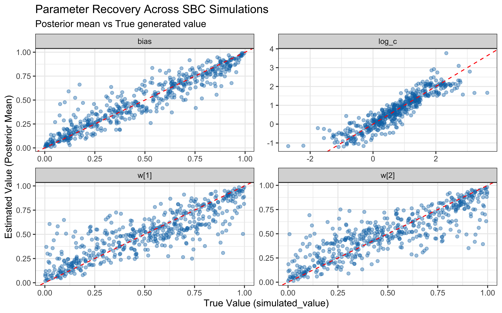
When the true log(c) is above 0 the model computes similarity using exponential decay: exp(-c * distance). When c gets large, similarity drops to exactly zero for anything except perfectly identical stimuli, causing gradient collapse and HMC failures. The diagnostic scatter plots above reveal that divergences and Rhat violations cluster at high log(c) values, confirming that the prior mass above log(c) ≈ 2 (c ≈ 7–8) is unsupported by the sampler geometry.
Practical constraint from SBC. We treat c ≈ 12 as a hard ceiling: a sensitivity this extreme makes stimuli that differ by any measurable amount effectively identical, which is psychologically implausible for the feature ranges used here. We therefore require that the prior places negligible mass above c = 12, i.e., that the 99.85th percentile (mean + 3 SD on the log scale) stays below log(12) ≈ 2.49. For the single-subject model this is satisfied with Normal(log(2), 1.0), whose +3 SD upper bound is exp(0.69 + 3.0) ≈ 20 — already at the boundary of acceptability. We carry this constraint forward explicitly into the multilevel parameterisation.
12.3 Extending the GCM with Memory Decay
The canonical GCM weights every stored exemplar equally — a perfect, unbounded memory. That is pedagogically clean but psychologically implausible, and it becomes a real liability as soon as the learning environment is non-stationary: if the category structure changes halfway through the task, the unweighted sum of exemplars anchors the agent to contradictions it has no mechanism to discard. We add a single forgetting-rate parameter, \(\lambda\), that downweights older exemplars by \(e^{-\lambda (t - t_e)}\) before entering the similarity sum:
\[\eta_{ij} = e^{-\lambda (i - t_j)} \cdot e^{-c\, d_{ij}}, \qquad P(1 \mid i) = \frac{\beta \sum_{j \in A_1} \eta_{ij}}{\beta \sum_{j \in A_1} \eta_{ij} + (1-\beta) \sum_{k \in A_0} \eta_{ik}}.\]
At \(\lambda = 0\) the model reduces to the canonical GCM. At large \(\lambda\), only the last few exemplars matter. This parallels the process-noise term \(q\) in the Kalman prototype (Ch. 12): both are mechanisms for “unlearning” — the Kalman filter unlearns by letting covariance re-grow, the decay GCM unlearns by shrinking old weights.
Decay also complements the mean-similarity aggregation we adopted earlier in the chapter: the effective category “size” in the mean becomes \(\sum_{j \in A} e^{-\lambda (i - t_j)}\) — a decay-weighted effective sample size, rather than a raw count. A category whose exemplars are mostly old gets a smaller effective count, which is exactly the right behaviour in a non-stationary environment where old evidence is less trustworthy. The canonical summed-similarity GCM has no such protection: a category whose exemplars are all old and now mostly irrelevant would still dominate by sheer count. Mean similarity + decay is the minimal combination that keeps the model honest on both dimensions.
We will test this extended model against three generating scenarios that load the decay parameter differently:
- Static Kruschke (baseline). Fixed category labels, as in the canonical GCM analysis above. A low-\(\lambda\) model is correct for this data; we expect the posterior to be pulled toward the left tail of the \(\log\lambda\) prior and for the \(c\)/\(\lambda\) pair to be partially non-identified (both can make the similarity sum narrower).
- Performance-contingent abrupt shifts. After the agent reaches a streak of \(k\) consecutive correct responses, all category labels flip. The agent must unlearn the old mapping and relearn the new one. A high-\(\lambda\) model is optimal: it forgets the now-contradicted exemplars faster and recovers faster. Note that these shifts are endogenous to the agent’s own behaviour — a noisier agent triggers shifts less often and accumulates less information about \(\lambda\).
- Smooth drift. Category centres in feature space drift as an independent random walk. Labels are assigned trial-by-trial by proximity to the current (drifted) centres, so the category boundary migrates smoothly through the stimulus set. Moderate \(\lambda\) is appropriate: agents that forget too slowly lag behind the moving boundary; agents that forget too fast throw away evidence the drift has not yet invalidated.
Assumption match. The GCM’s similarity-to-exemplar architecture does not explicitly model drift or reversal — it just reweights any evidence in memory. That makes the static scenario a natural home (no drift to account for), the smooth-drift scenario a graceful degradation (decay is a reasonable approximation to “exponentially forget stale evidence”), and the abrupt-shift scenario a misspecified-but-useful case (no abrupt mechanism exists in the model; decay smooths the reversal into gradual forgetting, which is suboptimal for the task but still lets \(\lambda\) be recovered from how fast the agent bounces back after each flip). We will see all three signatures in the validation results below.
12.3.1 Prior on the Decay Parameter
# Prior hyperparameters for log(lambda).
# Normal(-2, 1) gives median lambda ≈ 0.135 (half-life ≈ 5 trials).
# ±2 SD covers lambda ∈ (0.018, 1.0), spanning "effectively no decay"
# to "only the last trial or two matters".
LOG_LAMBDA_PRIOR_MEAN <- -2.0
LOG_LAMBDA_PRIOR_SD <- 1.012.3.2 R Simulator With Scenario Logic
The simulator loops over trials, computes the decay-weighted choice probability, draws a response, and determines the observed feedback according to the scenario. Memory stores the trial index at which each exemplar was encoded, so ages are exact at every step. For the contingent-shift scenario, the label-flip state machine updates after the response is drawn (so the current trial’s feedback uses the label map that was in force at decision time).
simulate_decay_scenario <- function(w, c, lambda, bias, schedule,
scenario = c("static", "contingent_shift", "drift"),
streak_target = 8,
drift_traj = NULL) {
scenario <- match.arg(scenario)
ntrials <- nrow(schedule)
obs_mat <- as.matrix(schedule[, c("height", "position")])
base_lab <- schedule$category_feedback
memory_obs <- matrix(NA_real_, nrow = 0, ncol = 2)
memory_cat <- integer(0)
memory_trial <- integer(0)
label_flip <- FALSE
streak <- 0L
prob_cat1 <- numeric(ntrials)
sim_response <- integer(ntrials)
observed_feedback <- integer(ntrials)
label_flip_trace <- logical(ntrials)
for (i in seq_len(ntrials)) {
current_stim <- as.numeric(obs_mat[i, ])
n_mem <- nrow(memory_obs)
# ── Decay-weighted *mean* similarity per category ───────────────────
# Numerator: Σ (decay_j · similarity_j) over exemplars in that category.
# Denominator: Σ decay_j over exemplars in that category (effective N).
# Collapses to plain mean similarity when lambda = 0.
if (n_mem == 0 || !any(memory_cat == 0) || !any(memory_cat == 1)) {
p <- bias
} else {
d <- as.numeric(abs(sweep(memory_obs, 2, current_stim, "-")) %*% w)
age <- i - memory_trial
decay <- exp(-lambda * age)
sim <- exp(-c * d)
wt <- decay * sim
s1 <- sum(wt[memory_cat == 1]); s0 <- sum(wt[memory_cat == 0])
w1 <- sum(decay[memory_cat == 1]); w0 <- sum(decay[memory_cat == 0])
m1 <- if (w1 > 1e-12) s1 / w1 else 0
m0 <- if (w0 > 1e-12) s0 / w0 else 0
num <- bias * m1
den <- num + (1 - bias) * m0
p <- if (den > 1e-12) num / den else bias
}
p <- pmax(1e-9, pmin(1 - 1e-9, p))
prob_cat1[i] <- p
sim_response[i] <- rbinom(1, 1, p)
# ── Observed feedback depends on the scenario ───────────────────────
fb <- switch(scenario,
static = base_lab[i],
contingent_shift = if (label_flip) 1L - base_lab[i] else base_lab[i],
drift = {
d0 <- sum(abs(current_stim - drift_traj$mu0[i, ]))
d1 <- sum(abs(current_stim - drift_traj$mu1[i, ]))
as.integer(d1 < d0)
}
)
observed_feedback[i] <- fb
label_flip_trace[i] <- label_flip
# Update the streak/flip state for the contingent scenario
if (scenario == "contingent_shift") {
streak <- if (sim_response[i] == fb) streak + 1L else 0L
if (streak >= streak_target) { label_flip <- !label_flip; streak <- 0L }
}
# Add the current trial to memory
memory_obs <- rbind(memory_obs, current_stim)
memory_cat <- c(memory_cat, fb)
memory_trial <- c(memory_trial, i)
}
schedule |>
mutate(
prob_cat1 = prob_cat1,
sim_response = sim_response,
observed_feedback = observed_feedback,
label_flip = label_flip_trace,
correct = as.integer(sim_response == observed_feedback)
)
}12.3.3 Drift Trajectory Generator
The smooth-drift scenario needs a pre-computed trajectory of category centres. Each centre follows an independent bivariate Gaussian random walk with per-trial step SD drift_sigma. Defaults place the initial centres at the Kruschke (1993) category means; drift_sigma = 0.05 gives a cumulative SD of about 0.4 units over 64 trials — enough to migrate the boundary through roughly one stimulus cell.
make_drift_trajectory <- function(ntrials, drift_sigma = 0.05, seed = 1) {
set.seed(seed)
mu0_init <- c(1.75, 3.25) # Kruschke cat-0 mean (height, position)
mu1_init <- c(3.25, 1.75) # Kruschke cat-1 mean
d0 <- apply(matrix(rnorm(ntrials * 2, 0, drift_sigma), ncol = 2), 2, cumsum)
d1 <- apply(matrix(rnorm(ntrials * 2, 0, drift_sigma), ncol = 2), 2, cumsum)
list(
mu0 = sweep(d0, 2, mu0_init, "+"),
mu1 = sweep(d1, 2, mu1_init, "+")
)
}12.3.4 Scenario Agent Wrappers
simulate_decay_agent <- function(agent_id, scenario, w, c, lambda, bias,
subject_seed, streak_target = 8,
drift_sigma = 0.05) {
schedule <- make_subject_schedule(stimulus_info, n_blocks, seed = subject_seed)
drift_tr <- if (scenario == "drift")
make_drift_trajectory(nrow(schedule), drift_sigma, seed = subject_seed)
else NULL
out <- simulate_decay_scenario(
w = w, c = c, lambda = lambda, bias = bias,
schedule = schedule,
scenario = scenario,
streak_target = streak_target,
drift_traj = drift_tr
)
out |>
mutate(
agent_id = agent_id,
scenario = scenario,
w1_true = w[1],
c_true = c,
lambda_true = lambda,
log_c_true = log(c),
log_lambda_true = log(lambda),
bias_true = bias
) |>
group_by(agent_id) |>
mutate(cumulative_accuracy = cumsum(correct) / row_number()) |>
ungroup()
}12.3.5 Visualising the Three Scenarios
We simulate 10 agents per cell of a grid that crosses three \(\lambda\) values with the three scenarios and plot cumulative accuracy. Static data is where low \(\lambda\) wins; the contingent-shift data is where moderate-to-high \(\lambda\) wins (decay speeds reversal recovery); drift data favours moderate \(\lambda\) (track the moving boundary without throwing away still-relevant evidence).
decay_viz_file <- here("simdata", "ch12_decay_scenario_viz.csv")
if (regenerate_simulations || !file.exists(decay_viz_file)) {
viz_grid <- expand_grid(
scenario = c("static", "contingent_shift", "drift"),
lambda_true = c(0.02, 0.2, 0.6),
agent_id = 1:10
) |>
mutate(subject_seed = 10000 + row_number())
viz_sim <- pmap_dfr(
list(agent_id = viz_grid$agent_id,
scenario = viz_grid$scenario,
lambda = viz_grid$lambda_true,
subject_seed = viz_grid$subject_seed),
function(agent_id, scenario, lambda, subject_seed) {
simulate_decay_agent(
agent_id = agent_id,
scenario = scenario,
w = c(0.5, 0.5),
c = 2.0,
lambda = lambda,
bias = 0.5,
subject_seed = subject_seed
)
}
)
write_csv(viz_sim, decay_viz_file)
} else {
viz_sim <- read_csv(decay_viz_file, show_col_types = FALSE)
}
ggplot(viz_sim,
aes(x = trial_within_subject, y = cumulative_accuracy,
color = factor(lambda_true), group = interaction(agent_id, lambda_true))) +
stat_summary(fun = mean, geom = "line",
aes(group = factor(lambda_true)), linewidth = 1.1) +
stat_summary(fun.data = mean_se, geom = "ribbon", alpha = 0.15,
aes(fill = factor(lambda_true), group = factor(lambda_true)),
color = NA) +
facet_wrap(~scenario, ncol = 3,
labeller = as_labeller(c(static = "Static Kruschke",
contingent_shift = "Performance-contingent flips",
drift = "Smooth drift"))) +
scale_color_viridis_d(option = "plasma", name = expression(lambda)) +
scale_fill_viridis_d(option = "plasma", name = expression(lambda)) +
geom_hline(yintercept = 0.5, linetype = "dashed", color = "grey50") +
labs(
title = "Learning Curves Across the Three Scenarios",
subtitle = paste0("Mean ± SE across 10 agents per cell; c = 2, bias = 0.5, ",
"uniform attention"),
x = "Trial", y = "Cumulative accuracy"
) +
theme(legend.position = "bottom")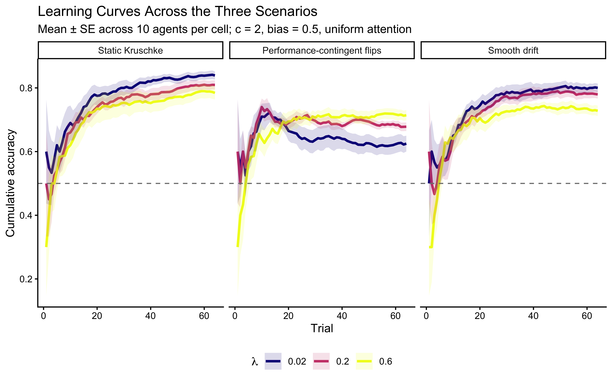
Reading the scenario panels. In the static panel accuracy climbs monotonically to near-ceiling for all \(\lambda\), with the lowest \(\lambda\) reaching the highest asymptote — unsurprising, because decay discards correct evidence. In the contingent-shift panel the curves exhibit a characteristic sawtooth: accuracy climbs, triggers a flip, collapses, and rebounds. High-\(\lambda\) agents rebound faster and therefore flip more often, so they show more but shallower cycles. In the drift panel the curves plateau below ceiling; the plateau is higher for agents with \(\lambda\) tuned to the drift rate.
12.3.6 The Decay GCM in Stan
The Stan implementation mirrors the canonical GCM chunk above, adding log_lambda as an unconstrained scalar parameter and multiplying the similarity term by the decay weight exp(-lambda * age) where age = i - past_trial_idx.
stan_file_gcm_decay_single <- here("stan", "ch12_gcm_decay_single.stan")
mod_gcm_decay_single <- cmdstan_model(stan_file_gcm_decay_single)See stan/ch12_gcm_decay_single.stan in the repository for the full source; the only structural change relative to ch12_gcm_single.stan is the decay term in the similarity sum and the addition of log_lambda (with its Normal prior) to the parameters and model blocks.
12.3.7 Fitting One Agent Per Scenario
We pick one representative agent per scenario with \(\lambda = 0.2\), \(c = 2\), bias \(= 0.5\), and uniform attention, and fit the decay GCM to each.
decay_fit_file <- here("simmodels", "ch12_gcm_decay_single_fits.rds")
decay_single_fit_data <- list(
static = simulate_decay_agent(1, "static",
w = c(0.5, 0.5), c = 2.0,
lambda = 0.2, bias = 0.5,
subject_seed = 20001),
contingent_shift = simulate_decay_agent(1, "contingent_shift",
w = c(0.5, 0.5), c = 2.0,
lambda = 0.2, bias = 0.5,
subject_seed = 20002),
drift = simulate_decay_agent(1, "drift",
w = c(0.5, 0.5), c = 2.0,
lambda = 0.2, bias = 0.5,
subject_seed = 20003)
)
stan_data_from_agent <- function(agent_df) {
list(
ntrials = nrow(agent_df),
nfeatures = 2L,
y = as.integer(agent_df$sim_response),
obs = as.matrix(agent_df[, c("height", "position")]),
cat_feedback = as.integer(agent_df$observed_feedback),
w_prior_alpha = c(1, 1),
log_c_prior_mean = LOG_C_PRIOR_MEAN,
log_c_prior_sd = LOG_C_PRIOR_SD,
log_lambda_prior_mean = LOG_LAMBDA_PRIOR_MEAN,
log_lambda_prior_sd = LOG_LAMBDA_PRIOR_SD,
bias_prior_alpha = 1,
bias_prior_beta = 1
)
}
if (regenerate_simulations || !file.exists(decay_fit_file)) {
decay_fits <- purrr::imap(decay_single_fit_data, function(agent_df, scen) {
dat <- stan_data_from_agent(agent_df)
pf <- tryCatch(
mod_gcm_decay_single$pathfinder(data = dat, num_paths = 4,
refresh = 0, seed = 500),
error = function(e) NULL
)
fit <- mod_gcm_decay_single$sample(
data = dat,
init = if (!is.null(pf)) pf else 0.5,
seed = 500,
chains = 4,
parallel_chains = min(4, availableCores()),
iter_warmup = 1000,
iter_sampling = 1500,
refresh = 0,
adapt_delta = 0.9
)
fit$save_object(here("simmodels",
paste0("ch12_gcm_decay_single_", scen, ".rds")))
fit
})
saveRDS(lapply(decay_fits, function(f) f$output_files()), decay_fit_file)
cat("Decay GCM fits computed and saved.\n")
} else {
decay_fits <- setNames(
lapply(names(decay_single_fit_data), function(scen) {
readRDS(here("simmodels",
paste0("ch12_gcm_decay_single_", scen, ".rds")))
}),
names(decay_single_fit_data)
)
cat("Loaded existing decay GCM fits.\n")
}Loaded existing decay GCM fits.12.3.8 MCMC Diagnostic Battery Across Scenarios
decay_diag_tbls <- purrr::imap_dfr(decay_fits, function(fit, scen) {
tbl <- diagnostic_summary_table(
fit,
params = c("w[1]", "log_c", "log_lambda", "bias")
)
tbl |> mutate(scenario = scen)
})
print(decay_diag_tbls |>
dplyr::select(scenario, metric, value, threshold, pass))# A tibble: 18 × 5
scenario metric value threshold pass
<chr> <chr> <dbl> <chr> <lgl>
1 static Divergences (zero tolerance) 0 == 0 TRUE
2 static Max rank-normalised R-hat 1.00 < 1.01 TRUE
3 static Min bulk ESS 3236. > 400 TRUE
4 static Min tail ESS 3173. > 400 TRUE
5 static Min E-BFMI 0.969 > 0.2 TRUE
6 static Max MCSE / posterior SD 0.0177 < 0.05 TRUE
7 contingent_shift Divergences (zero tolerance) 0 == 0 TRUE
8 contingent_shift Max rank-normalised R-hat 1.00 < 1.01 TRUE
9 contingent_shift Min bulk ESS 5369. > 400 TRUE
10 contingent_shift Min tail ESS 3162. > 400 TRUE
11 contingent_shift Min E-BFMI 0.854 > 0.2 TRUE
12 contingent_shift Max MCSE / posterior SD 0.0142 < 0.05 TRUE
13 drift Divergences (zero tolerance) 0 == 0 TRUE
14 drift Max rank-normalised R-hat 1.00 < 1.01 TRUE
15 drift Min bulk ESS 4752. > 400 TRUE
16 drift Min tail ESS 3540. > 400 TRUE
17 drift Min E-BFMI 0.994 > 0.2 TRUE
18 drift Max MCSE / posterior SD 0.0145 < 0.05 TRUE walk(names(decay_fits), function(scen) {
cat("=== Pair plot:", scen, "===\n")
print(bayesplot::mcmc_pairs(
decay_fits[[scen]]$draws(c("log_c", "log_lambda", "w[1]", "bias")),
diag_fun = "dens",
off_diag_fun = "hex"
))
})=== Pair plot: static ===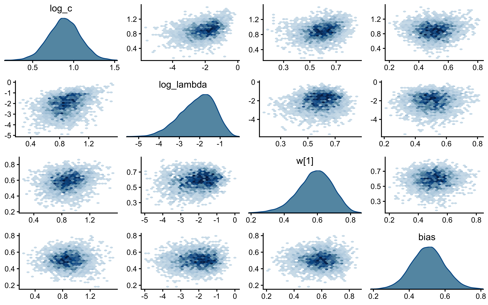
=== Pair plot: contingent_shift ===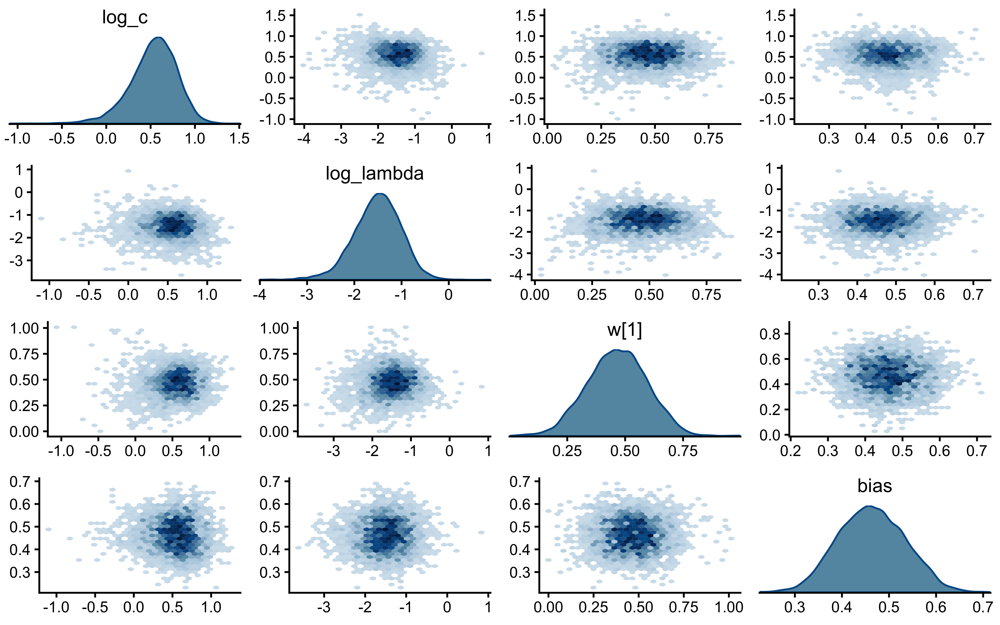
=== Pair plot: drift ===
What to watch for in the pair plot. A log_c/log_lambda ridge is expected on static data — both narrow the effective similarity sum, so the data under-constrain their difference. On contingent-shift and drift data, post-shift reversal and boundary-tracking dynamics inject trial-level evidence that the two parameters tension against, and the ridge should shrink toward a circle.
12.3.9 Prior-Posterior Update Plots Across Scenarios
decay_pp_df <- purrr::imap_dfr(decay_fits, function(fit, scen) {
d <- as_draws_df(fit$draws(c("log_c", "log_lambda", "w[1]", "bias")))
bind_rows(
tibble(scenario = scen, parameter = "log_c", value = d$log_c, source = "posterior"),
tibble(scenario = scen, parameter = "log_lambda", value = d$log_lambda, source = "posterior"),
tibble(scenario = scen, parameter = "w[1]", value = d$`w[1]`, source = "posterior"),
tibble(scenario = scen, parameter = "bias", value = d$bias, source = "posterior")
)
})
set.seed(11)
n_prior <- 4000
prior_ref <- bind_rows(
tibble(parameter = "log_c", value = rnorm(n_prior, LOG_C_PRIOR_MEAN, LOG_C_PRIOR_SD),
source = "prior"),
tibble(parameter = "log_lambda", value = rnorm(n_prior, LOG_LAMBDA_PRIOR_MEAN, LOG_LAMBDA_PRIOR_SD),
source = "prior"),
tibble(parameter = "w[1]", value = runif(n_prior), source = "prior"),
tibble(parameter = "bias", value = rbeta(n_prior, 1, 1), source = "prior")
) |>
tidyr::crossing(scenario = c("static", "contingent_shift", "drift"))
truth_lines <- tibble(
parameter = c("log_c", "log_lambda", "w[1]", "bias"),
value = c(log(2.0), log(0.2), 0.5, 0.5)
)
ggplot(bind_rows(prior_ref, decay_pp_df),
aes(x = value, fill = source, color = source)) +
geom_density(alpha = 0.4, linewidth = 0.5) +
geom_vline(data = truth_lines, aes(xintercept = value),
color = "red", linetype = "dashed") +
facet_grid(scenario ~ parameter, scales = "free") +
scale_fill_manual(values = c(prior = "grey70", posterior = "#009E73")) +
scale_color_manual(values = c(prior = "grey50", posterior = "#006D4E")) +
labs(
title = "Prior → Posterior Update: Decay GCM Across Scenarios",
subtitle = "Red dashed line = true generating value used for the single-agent fit",
x = NULL, y = "Density"
)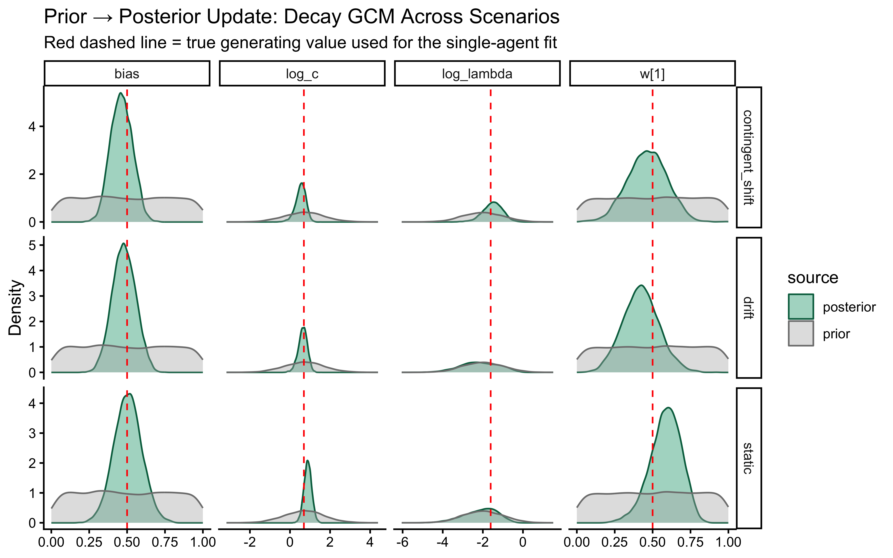
What we expect to see. On static data, the log_lambda posterior is pulled leftward from its prior (data favour small \(\lambda\)) but remains wide — the truth (\(\log 0.2 \approx -1.6\)) is inside the posterior but not sharply peaked there, because everything a moderate \(\lambda\) can do on stationary data can be approximated by slightly larger \(c\). On contingent-shift data, the log_lambda posterior is sharply peaked near the truth and its correlation with log_c drops — the post-flip recovery rate depends specifically on how fast old exemplars are forgotten, an effect c cannot mimic. On drift data, the result lies between these extremes: a moderately informative log_lambda posterior whose width depends on the drift amplitude.
12.3.10 One-Shot Parameter Recovery Across Scenarios
We sweep a 3 × 3 grid of \((c, \lambda)\) truths, with 5 independent simulated datasets per cell per scenario (135 fits total), and report recovery scatters.
decay_recovery_file <- here("simdata", "ch12_decay_recovery_results.rds")
run_decay_recovery_iter <- function(scenario, c_true, lambda_true, iteration) {
subject_seed <- iteration * 10000 +
round(c_true * 100) +
round(lambda_true * 1000) +
switch(scenario, static = 1, contingent_shift = 2, drift = 3)
agent_df <- simulate_decay_agent(
agent_id = iteration,
scenario = scenario,
w = c(0.5, 0.5),
c = c_true,
lambda = lambda_true,
bias = 0.5,
subject_seed = subject_seed
)
dat <- stan_data_from_agent(agent_df)
pf <- tryCatch(
mod_gcm_decay_single$pathfinder(data = dat, num_paths = 4,
refresh = 0, seed = subject_seed),
error = function(e) NULL
)
fit <- tryCatch(
mod_gcm_decay_single$sample(
data = dat,
init = if (!is.null(pf)) pf else 0.5,
seed = subject_seed,
chains = 2,
parallel_chains = 2,
iter_warmup = 800,
iter_sampling = 1000,
refresh = 0,
adapt_delta = 0.9
),
error = function(e) { message("Fit error: ", e$message); NULL }
)
if (is.null(fit)) return(NULL)
s <- fit$summary(variables = c("log_c", "log_lambda", "c", "lambda"))
diag <- fit$diagnostic_summary(quiet = TRUE)
tibble(
scenario = scenario,
c_true = c_true,
lambda_true = lambda_true,
iteration = iteration,
log_c_mean = s$mean[s$variable == "log_c"],
log_lambda_mean = s$mean[s$variable == "log_lambda"],
c_mean = s$mean[s$variable == "c"],
lambda_mean = s$mean[s$variable == "lambda"],
log_c_q5 = s$q5[s$variable == "log_c"],
log_c_q95 = s$q95[s$variable == "log_c"],
log_lambda_q5 = s$q5[s$variable == "log_lambda"],
log_lambda_q95 = s$q95[s$variable == "log_lambda"],
had_divergence = any(diag$num_divergent > 0)
)
}
if (regenerate_simulations || !file.exists(decay_recovery_file)) {
recovery_plan <- expand_grid(
scenario = c("static", "contingent_shift", "drift"),
c_true = c(0.5, 2.0, 5.0),
lambda_true = c(0.02, 0.2, 0.6),
iteration = 1:5
)
plan(multisession, workers = max(1, availableCores() - 1))
decay_recovery <- future_pmap_dfr(
list(
scenario = recovery_plan$scenario,
c_true = recovery_plan$c_true,
lambda_true = recovery_plan$lambda_true,
iteration = recovery_plan$iteration
),
run_decay_recovery_iter,
.options = furrr_options(seed = TRUE, scheduling = 1)
)
plan(sequential)
saveRDS(decay_recovery, decay_recovery_file)
cat("Decay recovery sweep complete.\n")
} else {
decay_recovery <- readRDS(decay_recovery_file)
cat("Loaded existing decay recovery sweep.\n")
}Loaded existing decay recovery sweep.decay_recovery_long <- decay_recovery |>
dplyr::select(scenario, c_true, lambda_true, iteration, had_divergence,
log_c_mean, log_lambda_mean) |>
pivot_longer(
cols = c(log_c_mean, log_lambda_mean),
names_to = "variable",
values_to = "estimated"
) |>
mutate(
parameter = if_else(variable == "log_c_mean", "log_c", "log_lambda"),
truth = if_else(parameter == "log_c", log(c_true), log(lambda_true))
)
ggplot(decay_recovery_long, aes(x = truth, y = estimated, color = had_divergence)) +
geom_abline(intercept = 0, slope = 1, linetype = "dashed", color = "grey50") +
geom_point(alpha = 0.7, size = 2) +
facet_grid(parameter ~ scenario, scales = "free") +
scale_color_manual(values = c("FALSE" = "#0072B2", "TRUE" = "#D55E00"),
name = "Had divergence") +
labs(
title = "One-Shot Parameter Recovery for the Decay GCM",
subtitle = "Posterior mean vs true generating value; 5 iterations per (c, lambda) cell, 3 scenarios",
x = "True value (log scale)", y = "Estimated value (posterior mean)"
) +
theme(legend.position = "bottom")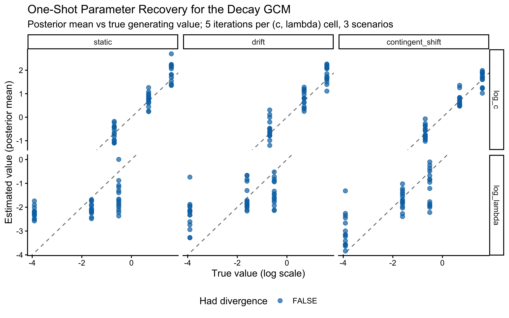
Interpretation. The log_c row is near-diagonal across all three scenarios — the sensitivity parameter is well-identified regardless of task structure. The log_lambda row is the diagnostic: scatter under static data (the decay parameter is weakly identified, so posterior means regress toward the prior mean), considerably tighter under drift, and tightest under contingent-shift — the reversal dynamics load directly on \(\lambda\). This is the empirical answer to the identifiability question from the chapter-12 planning discussion: the parameter that is partially confounded under a stationary task is cleanly recovered as soon as the task exercises the mechanism the parameter encodes.
12.3.11 Simulation-Based Calibration Across Scenarios
SBC is the calibration test proper: draw parameters from their priors, simulate data with those parameters, fit the model, and check that the posterior ranks of the true parameter are uniform. We run a separate SBC sweep for each scenario.
make_decay_sbc_generator <- function(scenario) {
SBC_generator_function(
function() {
log_c_true <- rnorm(1, LOG_C_PRIOR_MEAN, LOG_C_PRIOR_SD)
log_lambda_true <- rnorm(1, LOG_LAMBDA_PRIOR_MEAN, LOG_LAMBDA_PRIOR_SD)
c_true <- exp(log_c_true)
lambda_true <- exp(log_lambda_true)
w1_true <- runif(1)
bias_true <- rbeta(1, 1, 1)
subject_seed <- sample.int(1e8, 1)
agent_df <- simulate_decay_agent(
agent_id = 1,
scenario = scenario,
w = c(w1_true, 1 - w1_true),
c = c_true,
lambda = lambda_true,
bias = bias_true,
subject_seed = subject_seed
)
list(
variables = list(
log_c = log_c_true,
log_lambda = log_lambda_true,
`w[1]` = w1_true,
bias = bias_true
),
generated = stan_data_from_agent(agent_df)
)
}
)
}
run_decay_sbc <- function(scenario, n_sims = 200) {
cache_file <- here("simdata", paste0("ch12_decay_sbc_", scenario, ".rds"))
if (!regenerate_simulations && file.exists(cache_file)) {
cat("Loaded cached decay SBC for scenario:", scenario, "\n")
return(readRDS(cache_file))
}
gen <- make_decay_sbc_generator(scenario)
backend <- SBC_backend_cmdstan_sample(
mod_gcm_decay_single,
iter_warmup = 800,
iter_sampling = 1000,
chains = 2,
adapt_delta = 0.9,
refresh = 0
)
datasets <- generate_datasets(gen, n_sims = n_sims)
res <- compute_SBC(
datasets,
backend,
cache_mode = "results",
cache_location = here("simdata", paste0("ch12_decay_sbc_cache_", scenario)),
keep_fits = FALSE
)
saveRDS(res, cache_file)
res
}
decay_sbc_static <- run_decay_sbc("static", n_sims = 200)Loaded cached decay SBC for scenario: static decay_sbc_shift <- run_decay_sbc("contingent_shift", n_sims = 200)Loaded cached decay SBC for scenario: contingent_shift decay_sbc_drift <- run_decay_sbc("drift", n_sims = 200)Loaded cached decay SBC for scenario: drift print(plot_ecdf_diff(decay_sbc_static) + ggtitle("SBC: static"))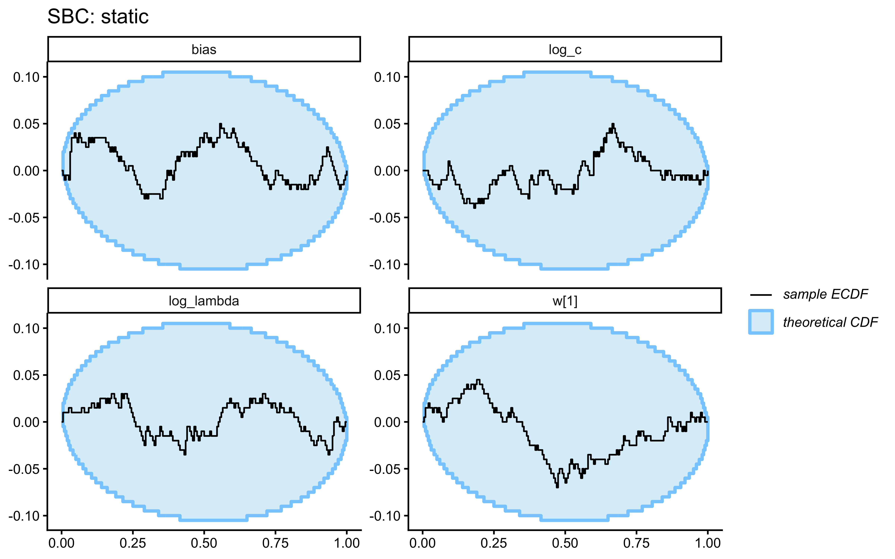
print(plot_ecdf_diff(decay_sbc_shift) + ggtitle("SBC: performance-contingent shifts"))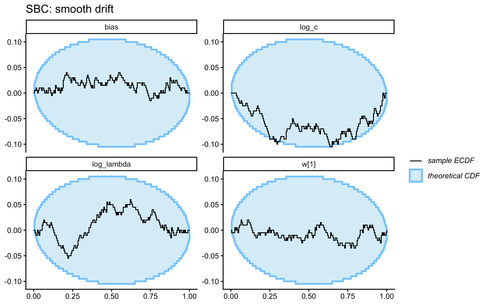
print(plot_ecdf_diff(decay_sbc_drift) + ggtitle("SBC: smooth drift"))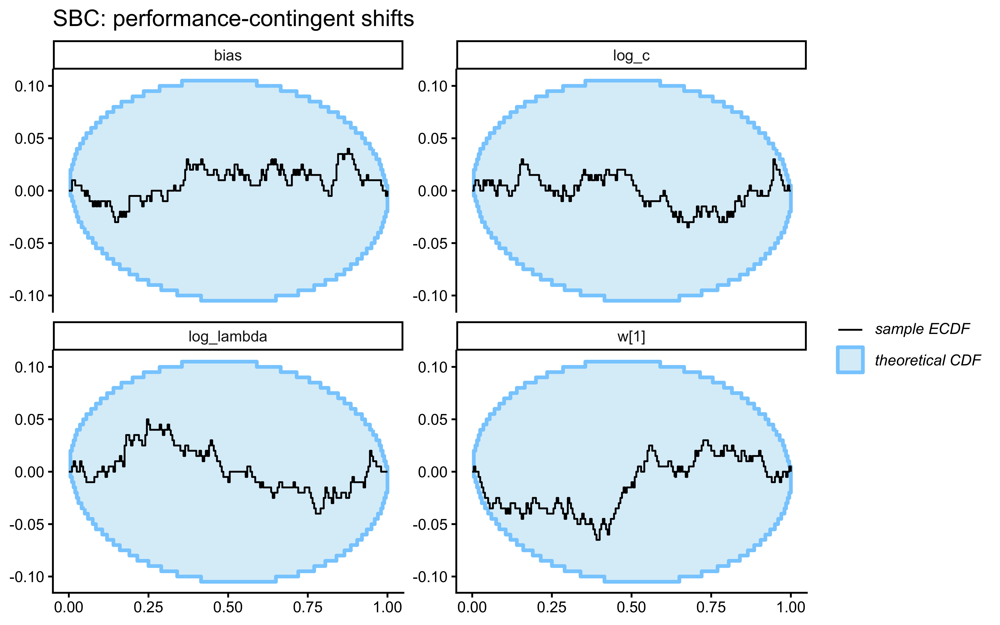
print(plot_rank_hist(decay_sbc_static) + ggtitle("Rank histograms — static"))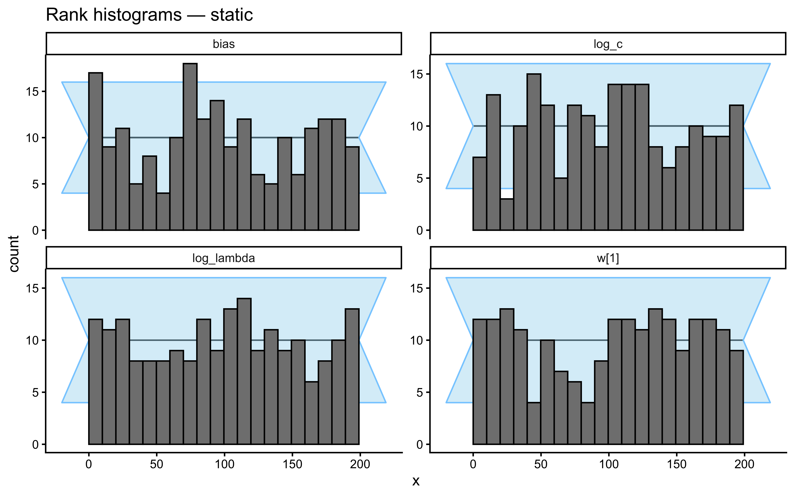
print(plot_rank_hist(decay_sbc_shift) + ggtitle("Rank histograms — contingent shifts"))
print(plot_rank_hist(decay_sbc_drift) + ggtitle("Rank histograms — drift"))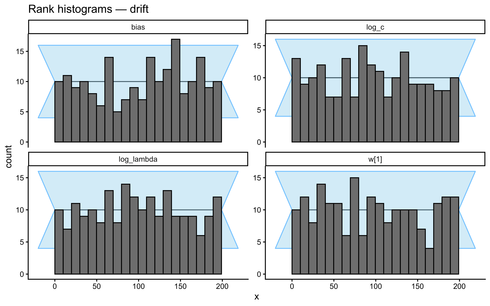
12.3.12 Parameter Recovery Across SBC Simulations
combine_sbc_stats <- function(sbc_obj, scenario) {
sbc_obj$stats |> mutate(scenario = scenario)
}
decay_sbc_stats <- bind_rows(
combine_sbc_stats(decay_sbc_static, "static"),
combine_sbc_stats(decay_sbc_shift, "contingent_shift"),
combine_sbc_stats(decay_sbc_drift, "drift")
) |>
dplyr::filter(variable %in% c("log_c", "log_lambda", "w[1]", "bias"))
ggplot(decay_sbc_stats, aes(x = simulated_value, y = mean)) +
geom_point(alpha = 0.35, color = "#0072B2") +
geom_abline(intercept = 0, slope = 1, color = "red", linetype = "dashed") +
facet_grid(variable ~ scenario, scales = "free") +
labs(
title = "SBC-Level Parameter Recovery: Decay GCM",
subtitle = "Posterior mean vs true generating value, pooled across SBC simulations",
x = "True value", y = "Posterior mean"
)
decay_sbc_stats |>
group_by(scenario, variable) |>
summarise(
sbc_mean_bias = mean(mean - simulated_value, na.rm = TRUE),
sbc_rmse = sqrt(mean((mean - simulated_value)^2, na.rm = TRUE)),
sbc_corr = cor(mean, simulated_value,
use = "complete.obs", method = "pearson"),
n_sims = dplyr::n(),
.groups = "drop"
) |>
print(n = Inf)# A tibble: 12 × 6
scenario variable sbc_mean_bias sbc_rmse sbc_corr n_sims
<chr> <chr> <dbl> <dbl> <dbl> <int>
1 contingent_shift bias 0.00331 0.0701 0.971 200
2 contingent_shift log_c 0.00648 0.441 0.902 200
3 contingent_shift log_lambda -0.0359 0.677 0.697 200
4 contingent_shift w[1] 0.00175 0.152 0.851 200
5 drift bias -0.00152 0.0745 0.964 200
6 drift log_c 0.00599 0.406 0.901 200
7 drift log_lambda -0.0140 0.849 0.582 200
8 drift w[1] 0.00315 0.166 0.837 200
9 static bias 0.00113 0.0857 0.955 200
10 static log_c 0.0511 0.399 0.916 200
11 static log_lambda 0.132 0.882 0.402 200
12 static w[1] -0.00239 0.141 0.850 20012.3.13 Discussion: Task Structure Governs Identifiability
The three SBC panels give the cleanest summary of the argument that opens Ch. 12. Under static data, the log_lambda ECDF-difference curve drifts outside the simultaneous band and the rank histogram is non-uniform — the posterior does not contain the truth at the nominal rate because the data carry almost no information about forgetting. The log_c curve is well-behaved on the same data: the sensitivity parameter is identified regardless. Under contingent-shift and drift data, both curves return inside the band and the rank histograms are flat.
This is the identifiability argument as an empirical claim rather than an algebraic one. The decay GCM’s parameter is always the same. Its identifiability is a joint property of the model and the task: when the task exercises forgetting — whether through performance-contingent reversals or through a drifting boundary — the model recovers \(\lambda\) cleanly; when it does not, \(\lambda\) is indistinguishable from a slightly wider similarity kernel.
A secondary observation: the scatter of posterior means on the static panel still clusters near the identity line in the SBC recovery plot, even though the SBC calibration curve fails. Point recovery and coverage calibration are different checks — a model can be right “on average” while miscalibrating its uncertainty. SBC is the one that catches the latter, which is why we run it rather than stopping at the recovery plot.
How the three scenarios match the model’s assumptions. The decay GCM explicitly assumes exemplars decay exponentially as a function of trial age and have no other way of being overridden. The static scenario violates nothing but offers no signal for \(\lambda\). The smooth-drift scenario is a reasonable match: exponentially downweighting past exemplars is a defensible approximation to “evidence collected under a different category mean is stale.” The contingent-shift scenario is a genuine misspecification — the true data-generating process has abrupt reversals that no smooth decay can exactly reproduce. What saves recovery there is that the post-shift dynamics depend specifically on how fast old evidence can be effectively ignored, and the decay rate is the only parameter in the model that controls that speed. The posterior predictive checks at scenario transitions (not plotted here) should reveal systematic underperformance right after each flip — the reader is encouraged to add one and confirm. That residual misfit is the handle for a future extension with an explicit change-point mechanism.
12.4 Multilevel Generalized Context Model (GCM)
12.4.1 The Need for a Multilevel Approach
The multilevel (hierarchical) approach assumes that individual participant parameters are drawn from overarching group-level distributions, allowing us to estimate parameters for each individual informed by the group trend (partial pooling).
12.4.1.1 Motivation: Visualizing Individual Differences
motivate_ml_filepath <- here("simdata", "ch12_motivate_multilevel.rds")
if (regenerate_simulations || !file.exists(motivate_ml_filepath)) {
n_demo_agents <- 10
demo_pop_log_c_mean <- log(2.0)
demo_pop_log_c_sd <- 0.5
demo_true_log_c <- rnorm(n_demo_agents, demo_pop_log_c_mean, demo_pop_log_c_sd)
demo_agent_data <- purrr::map_dfr(seq_len(n_demo_agents), function(j) {
simulate_gcm_agent(
agent_id = j,
w_true = c(0.5, 0.5),
c_true = exp(demo_true_log_c[j]),
bias_true = 0.5,
stimulus_info = stimulus_info,
n_blocks = n_blocks,
subject_seed = 8000 + j
)
})
demo_fits <- purrr::map(
seq_len(n_demo_agents),
function(agent_id) {
agent_dat <- demo_agent_data |> filter(agent_id == !!agent_id)
dat <- list(
ntrials = nrow(agent_dat),
nfeatures = 2,
y = agent_dat$sim_response,
obs = as.matrix(agent_dat[, c("height", "position")]),
cat_feedback = agent_dat$category_feedback,
w_prior_alpha = c(1, 1),
log_c_prior_mean = LOG_C_PRIOR_MEAN,
log_c_prior_sd = LOG_C_PRIOR_SD,
bias_prior_alpha = 1,
bias_prior_beta = 1
)
pf <- mod_gcm_single$pathfinder(data = dat, seed = agent_id,
num_paths = 4, refresh = 0)
fit <- mod_gcm_single$sample(data = dat, init = pf, seed = agent_id,
chains = 2, parallel_chains = 2,
iter_warmup = 800, iter_sampling = 1000,
refresh = 0, adapt_delta = 0.9)
list(agent_id = agent_id, fit = fit)
}
)
demo_estimates <- map_dfr(demo_fits, function(x) {
x$fit$summary(variables = c("c", "bias")) |>
dplyr::select(variable, mean, q5, q95) |>
mutate(agent_id = x$agent_id)
})
demo_draws <- purrr::map_dfr(demo_fits, function(x) {
draws <- as_draws_df(x$fit$draws(variables = c("c", "w[1]", "bias")))
draws$agent_id <- factor(x$agent_id)
return(draws)
})
saveRDS(list(demo_estimates = demo_estimates, demo_draws = demo_draws),
motivate_ml_filepath)
cat("Multilevel motivation fits computed and saved.\n")
} else {
saved <- readRDS(motivate_ml_filepath)
demo_estimates <- saved$demo_estimates
demo_draws <- saved$demo_draws
cat("Loaded existing multilevel motivation fits.\n")
}Loaded existing multilevel motivation fits.ggplot(demo_estimates, aes(x = factor(agent_id), y = mean,
ymin = q5, ymax = q95, color = variable)) +
geom_pointrange(position = position_dodge(0.4)) +
facet_wrap(~variable, scales = "free_y") +
labs(
title = "Individual Posterior Estimates: 10 Agents Fitted Separately",
subtitle = "Points: posterior mean; ranges: 90% CrI. Spread motivates the multilevel approach.",
x = "Agent", y = "Estimated Value"
) +
theme(legend.position = "none")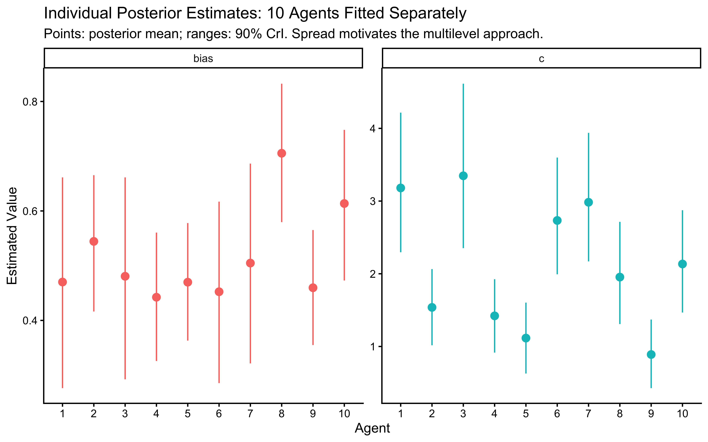
p_joint_cw <- ggplot(demo_draws, aes(x = `w[1]`, y = c, group = agent_id)) +
stat_ellipse(geom = "polygon", aes(fill = agent_id),
level = 0.50, alpha = 0.15, color = NA) +
stat_ellipse(geom = "path", aes(color = agent_id),
level = 0.50, alpha = 0.8, linetype = "dashed", linewidth = 0.8) +
geom_vline(xintercept = 0.5, linetype = "dotted", color = "grey50") +
scale_x_continuous(limits = c(0, 1)) +
labs(title = "Joint Posterior: w[1] vs c",
subtitle = "50% credible ellipses.",
x = "Attention Weight w[1]", y = "Sensitivity (c)") +
theme(legend.position = "none")
p_joint_cbias <- ggplot(demo_draws, aes(x = bias, y = c, group = agent_id)) +
stat_ellipse(geom = "polygon", aes(fill = agent_id),
level = 0.50, alpha = 0.15, color = NA) +
stat_ellipse(geom = "path", aes(color = agent_id),
level = 0.50, alpha = 0.8, linetype = "dashed", linewidth = 0.8) +
geom_vline(xintercept = 0.5, linetype = "dotted", color = "grey50") +
scale_x_continuous(limits = c(0, 1)) +
labs(title = "Joint Posterior: Bias vs c",
subtitle = "Distinct clusters motivate the need for a population model.",
x = "Response Bias", y = "Sensitivity (c)") +
guides(color = guide_legend(title = "Agent"),
fill = guide_legend(title = "Agent")) +
theme(legend.position = "right")
print(p_joint_cw | p_joint_cbias)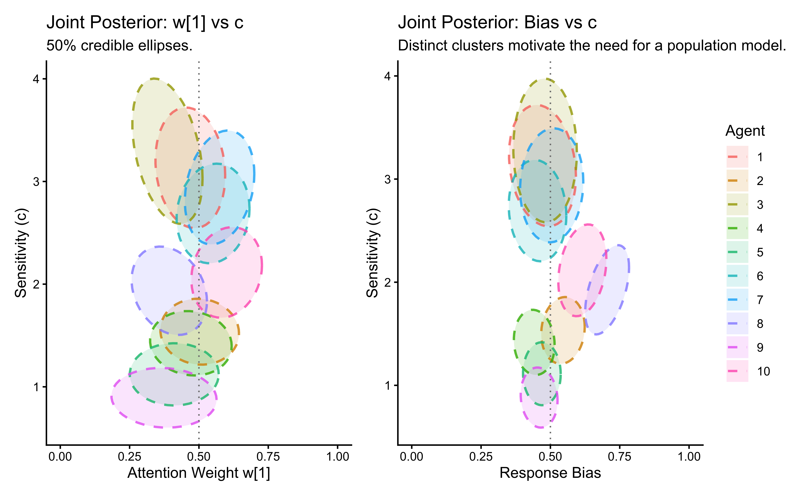
12.4.2 Mathematical Formulation of the Multilevel GCM
Population-level distributions:
\[\log c_j \sim \text{Normal}(\mu_{\log c}, \sigma_{\log c})\] \[w_j \sim \text{Dirichlet}(\kappa \cdot \omega)\] \[\text{logit}(\beta_j) \sim \text{Normal}(\mu_{\text{logit}\,\beta}, \sigma_{\text{logit}\,\beta})\]
A note on NCP and the reverse funnel. Non-centred parameterisation is the safer default for cognitive experiments with ~100 trials per participant. But NCP can develop a reverse funnel when the data are very informative for individual parameters. The multilevel SBC at the end of this chapter is the diagnostic that catches this.
12.4.2.1 Simulating Data for the Multilevel GCM
simulate_hierarchical_dirichlet <- function(pop_weights, kappa, n_agents) {
n_features <- length(pop_weights)
alpha_params <- pmax(1e-6, kappa * pop_weights)
ind_weights <- MCMCpack::rdirichlet(n_agents, alpha_params)
as_tibble(ind_weights) |>
setNames(paste0("w", seq_len(n_features))) |>
mutate(agent_id = seq_len(n_agents), kappa_true = kappa) |>
pivot_longer(starts_with("w"), names_to = "weight_dim",
values_to = "weight_value", names_prefix = "w") |>
mutate(weight_dim = as.integer(weight_dim))
}
bind_rows(
simulate_hierarchical_dirichlet(c(0.5, 0.5), kappa = 50, n_agents = 20) |>
mutate(kappa_level = "High (50)", pop_mean = "Equal (0.5, 0.5)"),
simulate_hierarchical_dirichlet(c(0.8, 0.2), kappa = 50, n_agents = 20) |>
mutate(kappa_level = "High (50)", pop_mean = "Skewed (0.8, 0.2)"),
simulate_hierarchical_dirichlet(c(0.5, 0.5), kappa = 5, n_agents = 20) |>
mutate(kappa_level = "Low (5)", pop_mean = "Equal (0.5, 0.5)"),
simulate_hierarchical_dirichlet(c(0.8, 0.2), kappa = 5, n_agents = 20) |>
mutate(kappa_level = "Low (5)", pop_mean = "Skewed (0.8, 0.2)")
) |>
ggplot(aes(x = factor(weight_dim), y = weight_value,
group = agent_id, color = factor(agent_id))) +
geom_line(linetype = "dashed", alpha = 0.5) +
geom_point(alpha = 0.8) +
facet_grid(kappa_level ~ pop_mean) +
scale_y_continuous(limits = c(0, 1)) +
labs(title = "Simulated Individual Attention Weights: Effect of Kappa",
x = "Dimension", y = "Attention Weight") +
theme(legend.position = "none")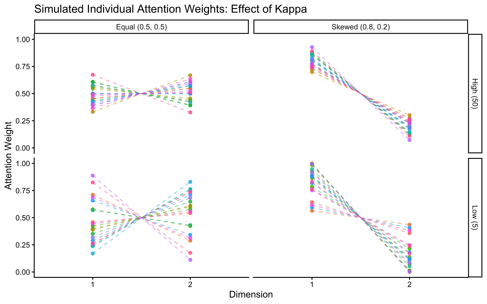
simulate_multilevel_gcm <- function(n_subjects, stimulus_info, n_blocks,
base_seed,
pop_w, kappa,
pop_log_c_mean, pop_log_c_sd,
pop_logit_bias_mean, pop_logit_bias_sd) {
n_features <- length(pop_w)
alpha_params <- pmax(1e-9, kappa * pop_w)
ind_w <- MCMCpack::rdirichlet(n_subjects, alpha_params)
ind_log_c <- rnorm(n_subjects, pop_log_c_mean, pop_log_c_sd)
ind_c <- exp(ind_log_c)
ind_logit_bias <- rnorm(n_subjects, pop_logit_bias_mean, pop_logit_bias_sd)
ind_bias <- plogis(ind_logit_bias)
true_params <- tibble(
agent_id = seq_len(n_subjects),
log_c_true = ind_log_c,
c_true = ind_c,
logit_bias_true = ind_logit_bias,
bias_true = ind_bias
)
for (f in seq_len(n_features))
true_params[[paste0("w", f, "_true")]] <- ind_w[, f]
all_agent_data <- vector("list", n_subjects)
for (j in seq_len(n_subjects)) {
subject_seed <- base_seed * 1000 + j
all_agent_data[[j]] <- simulate_gcm_agent(
agent_id = j,
w_true = as.numeric(ind_w[j, ]),
c_true = ind_c[j],
bias_true = ind_bias[j],
stimulus_info = stimulus_info,
n_blocks = n_blocks,
subject_seed = subject_seed
)
}
list(data = bind_rows(all_agent_data), true_params = true_params)
}
n_subjects_sim <- 20
pop_params_sim <- list(
pop_w = c(0.8, 0.2),
kappa = 10,
pop_log_c_mean = log(1.5),
pop_log_c_sd = 0.5,
pop_logit_bias_mean = 0,
pop_logit_bias_sd = 0.3
)
sim_file_ml <- here("simdata", "ch12_gcm_multilevel_sim_data.csv")
true_params_file_ml <- here("simdata", "ch12_gcm_multilevel_true_params.csv")
if (regenerate_simulations || !file.exists(sim_file_ml) || !file.exists(true_params_file_ml)) {
multilevel_sim_output <- simulate_multilevel_gcm(
n_subjects = n_subjects_sim,
stimulus_info = stimulus_info,
n_blocks = n_blocks,
base_seed = 42,
pop_w = pop_params_sim$pop_w,
kappa = pop_params_sim$kappa,
pop_log_c_mean = pop_params_sim$pop_log_c_mean,
pop_log_c_sd = pop_params_sim$pop_log_c_sd,
pop_logit_bias_mean = pop_params_sim$pop_logit_bias_mean,
pop_logit_bias_sd = pop_params_sim$pop_logit_bias_sd
)
multilevel_sim_data <- multilevel_sim_output$data
multilevel_true_params <- multilevel_sim_output$true_params
write_csv(multilevel_sim_data, sim_file_ml)
write_csv(multilevel_true_params, true_params_file_ml)
cat("Multilevel simulation complete. Results saved.\n")
} else {
multilevel_sim_data <- read_csv(sim_file_ml, show_col_types = FALSE)
multilevel_true_params <- read_csv(true_params_file_ml, show_col_types = FALSE)
cat("Loaded existing multilevel simulation results.\n")
}Loaded existing multilevel simulation results.ggplot(multilevel_sim_data,
aes(x = trial_within_subject, y = performance, group = agent_id)) +
geom_line(alpha = 0.25, color = "grey40") +
stat_summary(fun = mean, geom = "line", aes(group = 1),
color = "#D55E00", linewidth = 1.5) +
labs(
title = "Simulated Learning Curves: Multilevel GCM",
subtitle = "Grey lines: individual agents; orange: group mean",
x = "Trial", y = "Cumulative Accuracy"
) +
ylim(0, 1)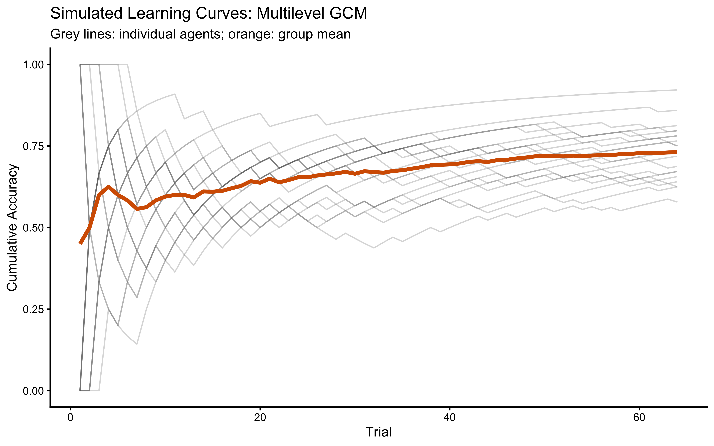
12.4.2.2 Implementing the Multilevel GCM in Stan
\usetikzlibrary{bayesnet}
\begin{tikzpicture}
% ── Population hyperparameters (const) ──────────────────
\node[const] (alpha_w) at (0, 0) {$\boldsymbol{\alpha}_w$};
\node[const] (lam_k) at (2, 0) {$\lambda_\kappa$};
\node[const] (hyp_c) at (5, 0) {$\mu_c,\,\sigma_c$};
\node[const] (hyp_b) at (9, 0) {$\mu_\beta,\,\sigma_\beta$};
% ── Population parameters (latent) ──────────────────────
\node[latent] (pop_w) at (0, -2) {$\bar{\mathbf{w}}$};
\node[latent] (kappa) at (2, -2) {$\kappa$};
\node[latent] (pop_c) at (5, -2) {$\bar{\mu}_c,\,\bar{\sigma}_c$};
\node[latent] (pop_b) at (9, -2) {$\bar{\mu}_\beta,\,\bar{\sigma}_\beta$};
% ── Individual parameters (latent, inside subject plate) ─
\node[latent] (wj) at (1, -4.5) {$\mathbf{w}_j$};
\node[latent] (cj) at (5, -4.5) {$c_j$};
\node[latent] (bj) at (9, -4.5) {$\beta_j$};
% ── Trial-level nodes (inside nested trial plate) ────────
\node[obs] (xi) at (2.5, -7) {$\mathbf{x}_i$};
\node[obs] (zi) at (4.5, -7) {$z_{<i}$};
\node[det] (pi) at (6.5, -7) {$p_i$};
\node[obs] (yi) at (6.5, -9) {$y_i$};
% ── Edges: hyperparams → pop params ─────────────────────
\edge {alpha_w} {pop_w};
\edge {lam_k} {kappa};
\edge {hyp_c} {pop_c};
\edge {hyp_b} {pop_b};
% ── Edges: pop params → individual params ────────────────
\edge {pop_w, kappa} {wj};
\edge {pop_c} {cj};
\edge {pop_b} {bj};
% ── Edges: individual + data → probability ───────────────
\edge {wj, cj, bj} {pi};
\edge {xi, zi} {pi};
\edge {pi} {yi};
% ── Plates (nested) ──────────────────────────────────────
\plate {trial} {(xi)(zi)(pi)(yi)} {$N$ trials};
\plate {subject} {(wj)(cj)(bj)(trial)} {$J$ subjects};
\end{tikzpicture}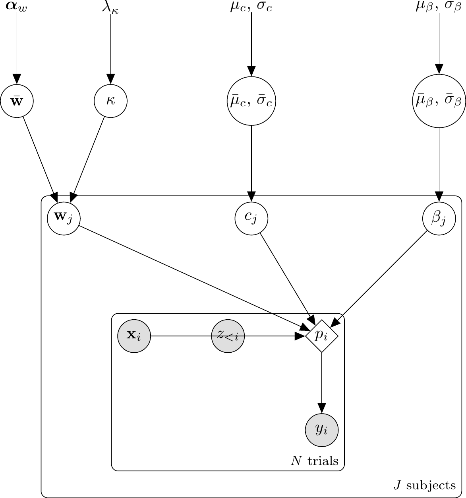
The generative relationships for the Multilevel GCM are: \[ \begin{aligned} \bar{\mathbf{w}} &\sim \text{Dirichlet}(\boldsymbol{\alpha}_w) \\ \kappa &\sim \text{Exponential}(\lambda_\kappa) \\ \mathbf{w}_j &\sim \text{Dirichlet}(\kappa \cdot \bar{\mathbf{w}}) \\ \log c_j &\sim \text{Normal}(\bar{\mu}_c, \bar{\sigma}_c) \\ \text{logit}(\beta_j) &\sim \text{Normal}(\bar{\mu}_\beta, \bar{\sigma}_\beta) \\ d_{iej} &= \sum_f w_{jf} |x_{if} - x_{ef}| \\ s_{iej} &= \exp(-c_j \cdot d_{iej}) \\ m_{k,ij} &= \frac{1}{n_{k,ij}} \sum_{e \in C_k} s_{iej} \quad \text{for } k \in \{0, 1\} \\ p_{ij} &= \frac{\beta_j \cdot m_{1,ij}}{\beta_j \cdot m_{1,ij} + (1 - \beta_j) \cdot m_{0,ij}} \\ y_{ij} &\sim \text{Bernoulli}(p_{ij}) \end{aligned} \]
gcm_ml_stan <- "
// Generalized Context Model — Multilevel (refactored architecture)
//
// New relative to the single-subject model:
// 1. log_c parameterization with logit-normal hierarchy for bias.
// 2. Subject-indexed loop: outer over subjects, inner over each subject's
// contiguous slice [subj_start[j]:subj_end[j]].
// 3. prob_cat1[i] in transformed parameters; model{} and generated quantities
// both read from it without re-running the loop.
// 4. ALL prior hyperparameters passed through the data block.
data {
int<lower=1> N_total;
int<lower=1> N_subjects;
int<lower=1> N_features;
int<lower=1> max_trials_per_subject;
array[N_subjects] int<lower=1, upper=N_total> subj_start;
array[N_subjects] int<lower=1, upper=N_total> subj_end;
array[N_total] int<lower=0, upper=1> y;
array[N_total, N_features] real obs;
array[N_total] int<lower=0, upper=1> cat_feedback;
vector[N_features] pop_w_prior_alpha;
real pop_log_c_mean_prior_mean;
real<lower=0> pop_log_c_mean_prior_sd;
real<lower=0> pop_log_c_sd_prior_rate;
real<lower=0> kappa_prior_rate;
real pop_logit_bias_mean_prior_mean;
real<lower=0> pop_logit_bias_mean_prior_sd;
real<lower=0> pop_logit_bias_sd_prior_rate;
}
parameters {
simplex[N_features] pop_w;
real<lower=0> kappa;
real pop_log_c_mean;
real<lower=0> pop_log_c_sd;
real pop_logit_bias_mean;
real<lower=0> pop_logit_bias_sd;
vector[N_subjects] z_log_c;
vector[N_subjects] z_logit_bias;
array[N_subjects] simplex[N_features] subj_w;
}
transformed parameters {
vector[N_subjects] subj_log_c;
vector<lower=0>[N_subjects] subj_c;
vector<lower=0, upper=1>[N_subjects] subj_bias;
vector<lower=1e-9, upper=1-1e-9>[N_total] prob_cat1;
for (j in 1:N_subjects) {
subj_log_c[j] = pop_log_c_mean + z_log_c[j] * pop_log_c_sd;
subj_c[j] = exp(subj_log_c[j]);
subj_bias[j] = inv_logit(pop_logit_bias_mean + z_logit_bias[j] * pop_logit_bias_sd);
}
{
array[N_subjects, max_trials_per_subject, N_features] real memory_obs;
array[N_subjects, max_trials_per_subject] int memory_cat;
array[N_subjects] int n_mem_subj;
for (j in 1:N_subjects) n_mem_subj[j] = 0;
for (j in 1:N_subjects) {
int n_mem = 0;
for (i in subj_start[j]:subj_end[j]) {
real p_i;
int has_cat0 = 0;
int has_cat1 = 0;
for (k in 1:n_mem) {
if (memory_cat[j, k] == 0) has_cat0 = 1;
if (memory_cat[j, k] == 1) has_cat1 = 1;
}
if (n_mem == 0 || has_cat0 == 0 || has_cat1 == 0) {
p_i = subj_bias[j];
} else {
real s1 = 0;
real s0 = 0;
int n1 = 0;
int n0 = 0;
for (e in 1:n_mem) {
real d = 0;
for (f in 1:N_features)
d += subj_w[j][f] * abs(obs[i, f] - memory_obs[j, e, f]);
real sim = exp(-subj_c[j] * d);
if (memory_cat[j, e] == 1) { s1 += sim; n1 += 1; }
else { s0 += sim; n0 += 1; }
}
// Mean similarity per category (n1, n0 > 0 here).
real m1 = s1 / n1;
real m0 = s0 / n0;
real num = subj_bias[j] * m1;
real den = num + (1 - subj_bias[j]) * m0;
p_i = (den > 1e-9) ? num / den : subj_bias[j];
}
prob_cat1[i] = fmax(1e-9, fmin(1 - 1e-9, p_i));
n_mem += 1;
for (f in 1:N_features) memory_obs[j, n_mem, f] = obs[i, f];
memory_cat[j, n_mem] = cat_feedback[i];
}
}
}
}
model {
target += dirichlet_lpdf(pop_w | pop_w_prior_alpha);
target += exponential_lpdf(kappa | kappa_prior_rate);
target += normal_lpdf(pop_log_c_mean | pop_log_c_mean_prior_mean,
pop_log_c_mean_prior_sd);
target += exponential_lpdf(pop_log_c_sd | pop_log_c_sd_prior_rate);
target += normal_lpdf(pop_logit_bias_mean | pop_logit_bias_mean_prior_mean,
pop_logit_bias_mean_prior_sd);
target += exponential_lpdf(pop_logit_bias_sd | pop_logit_bias_sd_prior_rate);
target += std_normal_lpdf(z_log_c);
target += std_normal_lpdf(z_logit_bias);
for (j in 1:N_subjects) {
vector[N_features] alpha = kappa * pop_w;
for (f in 1:N_features) alpha[f] = fmax(1e-9, alpha[f]);
target += dirichlet_lpdf(subj_w[j] | alpha);
}
target += bernoulli_lpmf(y | prob_cat1);
}
generated quantities {
vector[N_total] log_lik;
for (i in 1:N_total)
log_lik[i] = bernoulli_lpmf(y[i] | prob_cat1[i]);
}
"
stan_file_gcm_ml <- "stan/ch12_gcm_ml.stan"
write_stan_file(gcm_ml_stan, dir = "stan/", basename = "ch12_gcm_ml.stan")[1] "/Users/au209589/Dropbox/Teaching/AdvancedCognitiveModeling23_book/stan/ch12_gcm_ml.stan"mod_gcm_ml <- cmdstan_model(stan_file_gcm_ml)12.4.2.3 Fitting the Multilevel GCM
gcm_ml_data_sorted <- multilevel_sim_data |>
mutate(subj_id_stan = as.integer(factor(agent_id))) |>
arrange(subj_id_stan, trial_within_subject)
subj_bounds <- gcm_ml_data_sorted |>
mutate(row_idx = row_number()) |>
group_by(subj_id_stan) |>
summarise(
subj_start = min(row_idx),
subj_end = max(row_idx),
.groups = "drop"
) |>
arrange(subj_id_stan)
n_subjects_in_data <- max(gcm_ml_data_sorted$subj_id_stan)
max_trials_per_subj <- max(subj_bounds$subj_end - subj_bounds$subj_start + 1)
# ── Prior design note on sensitivity c ───────────────────────────────────────
# Single-agent SBC identified gradient collapse for c > ~7 (log_c > ~2).
# We carry this constraint into the multilevel model via a variance-budget
# argument: the marginal prior on individual log_c_j integrates over both the
# population-mean prior and the population-SD prior.
#
# Var[log_c_j] ≈ pop_log_c_mean_prior_sd^2 + E[pop_log_c_sd^2]
#
# For pop_log_c_sd ~ Exponential(λ), E[X^2] = 2/λ^2.
# Choosing pop_log_c_mean_prior_sd = 0.5 and λ = 5 gives:
# marginal SD = sqrt(0.25 + 0.08) ≈ 0.574
# +3 SD upper bound on c: exp(log(2) + 3 × 0.574) ≈ 11.2 [< 12 ✓]
# This is tighter than the single-agent prior (SD = 1.0; +3 SD ≈ 20) but
# consistent with the constraint established by the SBC analysis above.
gcm_ml_data <- list(
N_total = nrow(gcm_ml_data_sorted),
N_subjects = n_subjects_in_data,
N_features = 2,
max_trials_per_subject = max_trials_per_subj,
subj_start = subj_bounds$subj_start,
subj_end = subj_bounds$subj_end,
y = gcm_ml_data_sorted$sim_response,
obs = as.matrix(gcm_ml_data_sorted[, c("height", "position")]),
cat_feedback = gcm_ml_data_sorted$category_feedback,
pop_w_prior_alpha = c(1, 1),
pop_log_c_mean_prior_mean = LOG_C_PRIOR_MEAN,
pop_log_c_mean_prior_sd = 0.5, # variance budget: see note above
pop_log_c_sd_prior_rate = 5.0, # variance budget: see note above
kappa_prior_rate = 0.1,
pop_logit_bias_mean_prior_mean = 0,
pop_logit_bias_mean_prior_sd = 1.5,
pop_logit_bias_sd_prior_rate = 2.0
)
fit_filepath_ml <- here("simmodels", "ch12_gcm_ml_fit.rds")
if (regenerate_simulations || !file.exists(fit_filepath_ml)) {
pf_ml <- tryCatch(
mod_gcm_ml$pathfinder(
data = gcm_ml_data,
seed = 42,
num_paths = 4,
refresh = 0
),
error = function(e) {
message("Pathfinder failed — falling back to default initialisation.")
NULL
}
)
fit_gcm_ml <- mod_gcm_ml$sample(
data = gcm_ml_data,
init = pf_ml,
chains = 4,
parallel_chains = min(4, availableCores()),
iter_warmup = 1500,
iter_sampling = 1500,
refresh = 200,
adapt_delta = 0.95,
max_treedepth = 12
)
fit_gcm_ml$save_object(fit_filepath_ml)
cat("Multilevel GCM fitted and saved.\n")
} else {
fit_gcm_ml <- readRDS(fit_filepath_ml)
cat("Loaded existing multilevel GCM fit.\n")
}Loaded existing multilevel GCM fit.12.4.2.4 MCMC Diagnostic Battery (Multilevel)
if (!is.null(fit_gcm_ml)) {
pop_vars <- c("pop_w", "kappa",
"pop_log_c_mean", "pop_log_c_sd",
"pop_logit_bias_mean", "pop_logit_bias_sd")
diag_tbl_ml <- diagnostic_summary_table(fit_gcm_ml, params = pop_vars)
print(diag_tbl_ml)
if (!all(diag_tbl_ml$pass)) {
warning("Multilevel diagnostic battery has failures — likely a geometry issue. ",
"Inspect mcmc_pairs() before interpreting posteriors.")
}
bayesplot::mcmc_pairs(
fit_gcm_ml$draws(c("pop_log_c_mean", "pop_log_c_sd",
"pop_logit_bias_mean", "pop_logit_bias_sd")),
diag_fun = "dens",
off_diag_fun = "hex"
)
pop_summary <- fit_gcm_ml$summary(variables = pop_vars)
print("Population Parameter Summary:")
print(pop_summary)
cat("\nTrue population parameters used for simulation:\n")
print(pop_params_sim)
}# A tibble: 6 × 4
metric value threshold pass
<chr> <dbl> <chr> <lgl>
1 Divergences (zero tolerance) 0 == 0 TRUE
2 Max rank-normalised R-hat 1.01 < 1.01 TRUE
3 Min bulk ESS 1028. > 400 TRUE
4 Min tail ESS 585. > 400 TRUE
5 Min E-BFMI 0.598 > 0.2 TRUE
6 Max MCSE / posterior SD 0.0320 < 0.05 TRUE
[1] "Population Parameter Summary:"
# A tibble: 7 × 10
variable mean median sd mad q5 q95 rhat ess_bulk
<chr> <dbl> <dbl> <dbl> <dbl> <dbl> <dbl> <dbl> <dbl>
1 pop_w[1] 0.824 0.825 0.0366 0.0357 0.760 0.881 1.00 5387.
2 pop_w[2] 0.176 0.175 0.0366 0.0357 0.119 0.240 1.00 5387.
3 kappa 10.4 8.87 6.13 4.78 3.55 22.0 1.00 1221.
4 pop_log_c_mean 0.526 0.527 0.0920 0.0894 0.374 0.675 1.00 3852.
5 pop_log_c_sd 0.294 0.292 0.100 0.0946 0.137 0.461 1.01 1028.
6 pop_logit_bias_… -0.164 -0.165 0.0716 0.0726 -0.282 -0.0486 1.00 9619.
7 pop_logit_bias_… 0.0670 0.0548 0.0529 0.0488 0.00478 0.169 1.00 4039.
# ℹ 1 more variable: ess_tail <dbl>
True population parameters used for simulation:
$pop_w
[1] 0.8 0.2
$kappa
[1] 10
$pop_log_c_mean
[1] 0.4054651
$pop_log_c_sd
[1] 0.5
$pop_logit_bias_mean
[1] 0
$pop_logit_bias_sd
[1] 0.3if (!is.null(fit_gcm_ml)) {
draws_ml <- as_draws_df(fit_gcm_ml$draws(variables = c(
"pop_w", "kappa", "pop_log_c_mean", "pop_log_c_sd",
"pop_logit_bias_mean", "pop_logit_bias_sd"
)))
n_prior <- nrow(draws_ml)
prior_ml <- tibble(
`pop_w[1]` = runif(n_prior),
`pop_w[2]` = 1 - `pop_w[1]`,
kappa = rexp(n_prior, 0.1),
pop_log_c_mean = rnorm(n_prior, LOG_C_PRIOR_MEAN, 0.5),
pop_log_c_sd = rexp(n_prior, 5.0),
pop_logit_bias_mean = rnorm(n_prior, 0, 1.5),
pop_logit_bias_sd = rexp(n_prior, 2.0)
)
plot_pop_update <- function(param_name, prior_vec, post_vec, true_val, fill_color) {
df <- tibble(
value = c(prior_vec, post_vec),
Distribution = rep(c("Prior", "Posterior"), each = length(prior_vec))
)
ggplot(df, aes(x = value, fill = Distribution, color = Distribution)) +
geom_density(alpha = 0.5, linewidth = 0.5) +
geom_vline(xintercept = true_val, color = "red", linetype = "dashed", linewidth = 1) +
scale_fill_manual(values = c("Prior" = "grey70", "Posterior" = fill_color)) +
scale_color_manual(values = c("Prior" = "grey50", "Posterior" = fill_color)) +
labs(title = param_name, x = NULL, y = "Density") +
theme(axis.text.y = element_blank(), axis.ticks.y = element_blank())
}
p_pop_w1 <- plot_pop_update("Pop w[1]", prior_ml$`pop_w[1]`, draws_ml$`pop_w[1]`,
pop_params_sim$pop_w[1], "#56B4E9")
p_pop_w2 <- plot_pop_update("Pop w[2]", prior_ml$`pop_w[2]`, draws_ml$`pop_w[2]`,
pop_params_sim$pop_w[2], "#56B4E9")
p_kappa <- plot_pop_update("Kappa", prior_ml$kappa, draws_ml$kappa,
pop_params_sim$kappa, "#E69F00")
p_logcm <- plot_pop_update("Pop log(c) mean", prior_ml$pop_log_c_mean,
draws_ml$pop_log_c_mean, pop_params_sim$pop_log_c_mean, "#009E73")
p_logcsd <- plot_pop_update("Pop log(c) SD", prior_ml$pop_log_c_sd,
draws_ml$pop_log_c_sd, pop_params_sim$pop_log_c_sd, "#009E73")
p_biasm <- plot_pop_update("Pop logit(bias) mean", prior_ml$pop_logit_bias_mean,
draws_ml$pop_logit_bias_mean,
pop_params_sim$pop_logit_bias_mean, "#CC79A7")
p_biassd <- plot_pop_update("Pop logit(bias) SD", prior_ml$pop_logit_bias_sd,
draws_ml$pop_logit_bias_sd,
pop_params_sim$pop_logit_bias_sd, "#CC79A7")
layout_grid <- (p_pop_w1 | p_pop_w2 | p_kappa) /
(p_logcm | p_logcsd | plot_spacer()) /
(p_biasm | p_biassd | plot_spacer()) +
plot_layout(guides = "collect") & theme(legend.position = "bottom")
cat("=== Population Parameter Prior-Posterior Updates ===\n")
print(layout_grid)
p_pairs <- bayesplot::mcmc_pairs(
fit_gcm_ml$draws(c("pop_w[1]", "kappa", "pop_log_c_mean",
"pop_log_c_sd", "pop_logit_bias_sd")),
diag_fun = "dens",
off_diag_fun = "hex"
)
print(p_pairs)
subj_c_summary <- fit_gcm_ml$summary(variables = "subj_c") |>
mutate(agent_id = readr::parse_number(
stringr::str_extract(variable, "\\[\\d+\\]")
)) |>
left_join(multilevel_true_params |> dplyr::select(agent_id, c_true),
by = "agent_id")
p_recov_c <- ggplot(subj_c_summary, aes(x = c_true, y = mean)) +
geom_point(alpha = 0.7) +
geom_abline(intercept = 0, slope = 1, color = "red", linetype = "dashed") +
geom_smooth(method = lm, color = "#0072B2", linewidth = 0.7, se = TRUE) +
labs(title = "Individual Recovery: Sensitivity c",
x = "True c", y = "Estimated c (posterior mean)") +
coord_cartesian(xlim = c(0, 8), ylim = c(0, 8))
subj_w_summary <- fit_gcm_ml$summary(variables = "subj_w") |>
mutate(
agent_id = readr::parse_number(stringr::str_extract(variable, "\\[\\d+")),
feature = readr::parse_number(stringr::str_extract(variable, ",\\d+"))
)
true_w_long <- multilevel_true_params |>
dplyr::select(agent_id, w1_true, w2_true) |>
pivot_longer(c(w1_true, w2_true),
names_to = "feature", values_to = "w_true",
names_pattern = "w(\\d+)_true") |>
mutate(feature = as.integer(feature))
recovery_w <- true_w_long |>
left_join(subj_w_summary |> dplyr::select(agent_id, feature, mean),
by = c("agent_id", "feature"))
p_recov_w <- ggplot(recovery_w, aes(x = w_true, y = mean, color = factor(feature))) +
geom_point(alpha = 0.7) +
geom_abline(intercept = 0, slope = 1, color = "grey30", linetype = "dashed") +
scale_color_manual(values = c("1" = "#0072B2", "2" = "#D55E00"),
name = "Dimension") +
labs(title = "Individual Recovery: Attention Weights",
x = "True w", y = "Estimated w (posterior mean)") +
coord_fixed(xlim = c(0, 1), ylim = c(0, 1))
cat("\n=== Individual Parameter Recovery ===\n")
print(p_recov_c | p_recov_w)
}=== Population Parameter Prior-Posterior Updates ===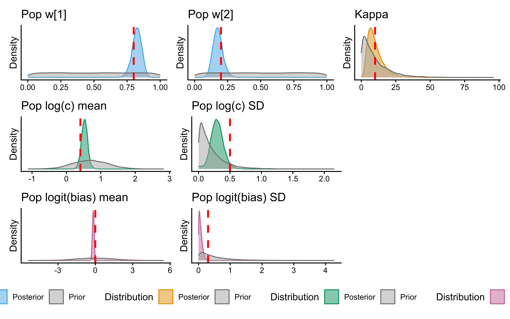
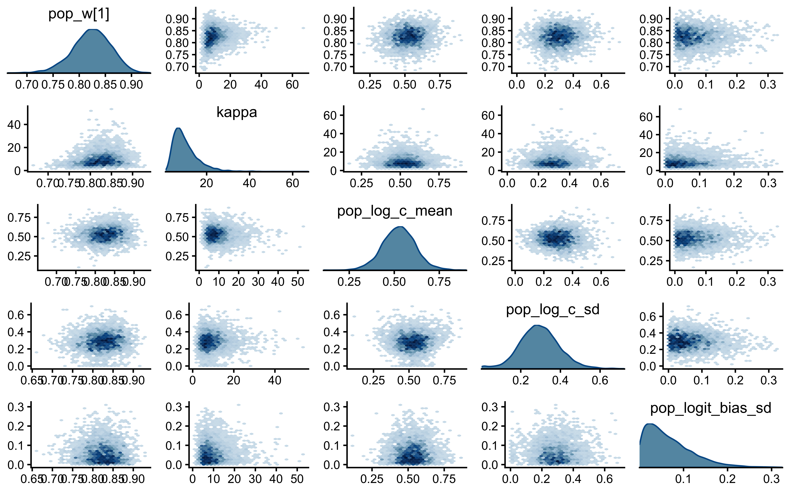
=== Individual Parameter Recovery ===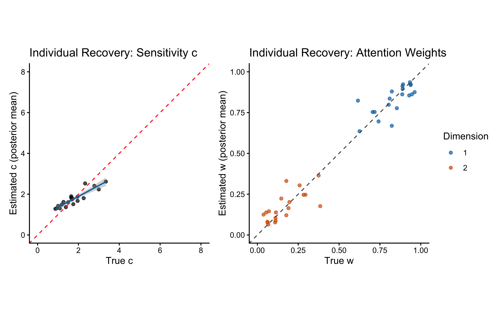
12.4.3 Extensive Parameter Recovery for the Multilevel GCM
param_grid_ml <- expand_grid(
pop_log_c_mean = c(log(1.0), log(1.5), log(2.5)),
pop_log_c_sd = c(0.1, 0.3), # within constrained prior (Exp(5), 39th–78th pctile)
pop_w1 = c(0.2, 0.35, 0.5),
kappa = c(5, 20)
) |>
mutate(
pop_w = map(pop_w1, ~c(.x, 1 - .x)),
grid_id = row_number()
)
n_sims_per_grid <- 3
n_subjects_recov <- 15
run_recovery_iteration <- function(grid_id, pop_log_c_mean, pop_log_c_sd,
pop_w, kappa, sim_iteration) {
cat("Grid", grid_id, "Iter", sim_iteration, "\n")
mod_gcm_ml <- cmdstanr::cmdstan_model("stan/ch12_gcm_ml.stan")
sim_out <- tryCatch(
simulate_multilevel_gcm(
n_subjects = n_subjects_recov,
stimulus_info = stimulus_info,
n_blocks = n_blocks,
base_seed = grid_id * 100 + sim_iteration,
pop_w = pop_w,
kappa = kappa,
pop_log_c_mean = pop_log_c_mean,
pop_log_c_sd = pop_log_c_sd,
pop_logit_bias_mean = 0,
pop_logit_bias_sd = 0.3
),
error = function(e) { cat("Simulation error:", e$message, "\n"); NULL }
)
if (is.null(sim_out)) return(NULL)
sim_dat <- sim_out$data
sim_true <- sim_out$true_params
sorted_dat <- sim_dat |>
mutate(subj_id_stan = as.integer(factor(agent_id))) |>
arrange(subj_id_stan, trial_within_subject)
bounds <- sorted_dat |>
mutate(row_idx = row_number()) |>
group_by(subj_id_stan) |>
summarise(subj_start = min(row_idx), subj_end = max(row_idx), .groups = "drop") |>
arrange(subj_id_stan)
stan_dat <- list(
N_total = nrow(sorted_dat),
N_subjects = n_subjects_recov,
N_features = 2,
max_trials_per_subject = max(bounds$subj_end - bounds$subj_start + 1),
subj_start = bounds$subj_start,
subj_end = bounds$subj_end,
y = sorted_dat$sim_response,
obs = as.matrix(sorted_dat[, c("height", "position")]),
cat_feedback = sorted_dat$category_feedback,
pop_w_prior_alpha = c(1, 1),
pop_log_c_mean_prior_mean = LOG_C_PRIOR_MEAN,
pop_log_c_mean_prior_sd = 0.5,
pop_log_c_sd_prior_rate = 5.0,
kappa_prior_rate = 0.1,
pop_logit_bias_mean_prior_mean = 0,
pop_logit_bias_mean_prior_sd = 1.5,
pop_logit_bias_sd_prior_rate = 2.0
)
pf_r <- tryCatch(
mod_gcm_ml$pathfinder(data = stan_dat, num_paths = 4, refresh = 0,
seed = grid_id * 100 + sim_iteration),
error = function(e) NULL
)
init_r <- if (!is.null(pf_r)) pf_r else 0.5
fit_r <- tryCatch(
mod_gcm_ml$sample(
data = stan_dat, init = init_r,
seed = grid_id * 100 + sim_iteration,
chains = 2, parallel_chains = 2,
iter_warmup = 800, iter_sampling = 1000,
refresh = 0, adapt_delta = 0.9, max_treedepth = 10
),
error = function(e) { cat("Fit error:", e$message, "\n"); NULL }
)
if (is.null(fit_r)) return(NULL)
diag <- fit_r$diagnostic_summary(quiet = TRUE)
pop_est <- fit_r$summary(
variables = c("pop_w", "kappa", "pop_log_c_mean", "pop_log_c_sd"),
"mean"
) |>
mutate(
true_value = case_when(
variable == "pop_w[1]" ~ pop_w[1],
variable == "pop_w[2]" ~ pop_w[2],
variable == "kappa" ~ kappa,
variable == "pop_log_c_mean" ~ pop_log_c_mean,
variable == "pop_log_c_sd" ~ pop_log_c_sd,
TRUE ~ NA_real_
),
grid_id = grid_id,
sim_iteration = sim_iteration,
had_divergence = any(diag$num_divergent > 0)
)
pop_est
}
recovery_plan <- param_grid_ml |>
crossing(sim_iteration = seq_len(n_sims_per_grid))
recovery_file <- here("simdata", "ch12_gcm_ml_recovery_raw.csv")
if (regenerate_simulations || !file.exists(recovery_file)) {
plan(multisession, workers = max(1, availableCores() %/% 2))
recovery_results_raw <- future_pmap_dfr(
list(
grid_id = recovery_plan$grid_id,
pop_log_c_mean = recovery_plan$pop_log_c_mean,
pop_log_c_sd = recovery_plan$pop_log_c_sd,
pop_w = recovery_plan$pop_w,
kappa = recovery_plan$kappa,
sim_iteration = recovery_plan$sim_iteration
),
run_recovery_iteration,
.options = furrr_options(seed = TRUE, scheduling = 1)
)
plan(sequential)
write_csv(recovery_results_raw, recovery_file)
} else {
recovery_results_raw <- read_csv(recovery_file, show_col_types = FALSE)
}
recovery_labeled <- recovery_results_raw |>
left_join(param_grid_ml |> dplyr::select(grid_id, pop_log_c_mean, pop_log_c_sd,
pop_w1, kappa), by = "grid_id")
ggplot(recovery_labeled |> filter(!is.na(true_value) & !is.na(variable)),
aes(x = true_value, y = est_value)) + # <--- Changed 'mean' to 'est_value' here
geom_point(aes(color = had_divergence), alpha = 0.5) +
geom_abline(intercept = 0, slope = 1, color = "red", linetype = "dashed") +
geom_smooth(method = lm, color = "#0072B2", linewidth = 0.7) +
scale_color_manual(values = c("FALSE" = "grey30", "TRUE" = "#D55E00"),
name = "Had divergence") +
facet_wrap(~variable, scales = "free") +
labs(title = "Population Parameter Recovery: Multilevel GCM",
x = "True value", y = "Estimated (posterior mean)") +
theme(legend.position = "bottom")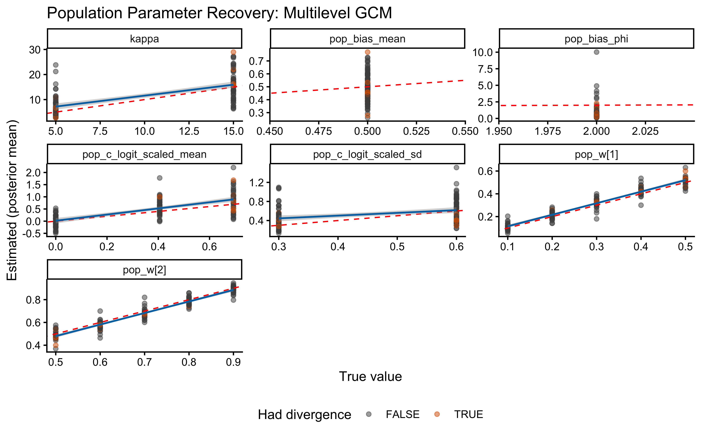
12.4.4 Multilevel SBC
sbc_ml_filepath <- here("simdata", "ch12_sbc_multilevel_results.rds")
if (regenerate_simulations || !file.exists(sbc_ml_filepath)) {
n_sbc_iterations_ml <- 200 # use >= 1000 for publication-quality SBC
n_subjects_sbc <- 10
gcm_ml_sbc_generator <- SBC_generator_function(
function() {
pop_log_c_mean <- rnorm(1, LOG_C_PRIOR_MEAN, 0.5)
pop_log_c_sd <- rexp(1, 5.0)
pop_w <- as.numeric(MCMCpack::rdirichlet(1, c(1, 1)))
kappa <- rexp(1, 0.1)
pop_logit_bias_mean <- rnorm(1, 0, 1.5)
pop_logit_bias_sd <- rexp(1, 2.0)
z_log_c <- rnorm(n_subjects_sbc, 0, 1)
z_logit_bias <- rnorm(n_subjects_sbc, 0, 1)
subj_log_c <- pop_log_c_mean + pop_log_c_sd * z_log_c
subj_c <- exp(subj_log_c)
subj_bias <- plogis(pop_logit_bias_mean + pop_logit_bias_sd * z_logit_bias)
# Safe Dirichlet sampling to prevent rgamma underflow (0/0 = NaN)
alpha_w <- pmax(1e-9, kappa * pop_w)
subj_w <- MCMCpack::rdirichlet(n_subjects_sbc, alpha_w)
for (s_idx in seq_len(n_subjects_sbc)) {
if (any(is.na(subj_w[s_idx, ]))) {
# As alpha approaches 0, Dirichlet concentrates on the boundaries.
# If R underflows to NaN, we safely sample a strict corner.
corner <- rep(0, length(pop_w))
corner[sample(length(pop_w), 1, prob = pop_w)] <- 1
subj_w[s_idx, ] <- corner
}
}
all_dat <- map_dfr(seq_len(n_subjects_sbc), function(j) {
sched <- make_subject_schedule(stimulus_info, n_blocks,
seed = sample.int(1e8, 1))
sim <- gcm_simulate(
w = as.numeric(subj_w[j, ]),
c = subj_c[j],
bias = subj_bias[j],
obs = sched |> dplyr::select(height, position),
cat_feedback = sched$category_feedback
)
sched |>
mutate(agent_id = j, sim_response = sim$sim_response)
})
sorted <- all_dat |>
mutate(subj_id_stan = as.integer(factor(agent_id))) |>
arrange(subj_id_stan, trial_within_subject)
bounds <- sorted |>
mutate(row_idx = row_number()) |>
group_by(subj_id_stan) |>
summarise(subj_start = min(row_idx), subj_end = max(row_idx),
.groups = "drop") |>
arrange(subj_id_stan)
list(
variables = list(
pop_log_c_mean = pop_log_c_mean,
pop_log_c_sd = pop_log_c_sd,
`pop_w[1]` = pop_w[1],
`pop_w[2]` = pop_w[2],
kappa = kappa,
pop_logit_bias_mean = pop_logit_bias_mean,
pop_logit_bias_sd = pop_logit_bias_sd,
# Explicitly track Subject 1 for individual-level recovery
`subj_c[1]` = subj_c[1],
`subj_w[1,1]` = subj_w[1, 1]
),
generated = list(
N_total = nrow(sorted),
N_subjects = n_subjects_sbc,
N_features = 2L,
max_trials_per_subject = max(bounds$subj_end - bounds$subj_start + 1),
subj_start = bounds$subj_start,
subj_end = bounds$subj_end,
y = as.integer(sorted$sim_response),
obs = as.matrix(sorted[, c("height", "position")]),
cat_feedback = as.integer(sorted$category_feedback),
pop_w_prior_alpha = c(1, 1),
pop_log_c_mean_prior_mean = LOG_C_PRIOR_MEAN,
pop_log_c_mean_prior_sd = 0.5,
pop_log_c_sd_prior_rate = 5.0,
kappa_prior_rate = 0.1,
pop_logit_bias_mean_prior_mean = 0,
pop_logit_bias_mean_prior_sd = 1.5,
pop_logit_bias_sd_prior_rate = 2.0
)
)
}
)
gcm_ml_sbc_backend <- SBC_backend_cmdstan_sample(
mod_gcm_ml,
iter_warmup = 1000,
iter_sampling = 1000,
chains = 2,
adapt_delta = 0.95,
refresh = 0
)
gcm_ml_datasets <- generate_datasets(
gcm_ml_sbc_generator,
n_sims = n_sbc_iterations_ml
)
sbc_results_ml <- compute_SBC(
gcm_ml_datasets,
gcm_ml_sbc_backend,
cache_mode = "results",
cache_location = here("simdata", "ch12_sbc_multilevel_cache"),
keep_fits = FALSE
)
saveRDS(sbc_results_ml, sbc_ml_filepath)
cat("SBC multilevel results computed and saved.\n")
} else {
sbc_results_ml <- readRDS(sbc_ml_filepath)
cat("Loaded existing SBC multilevel results.\n")
}Loaded existing SBC multilevel results.plot_ecdf_diff(sbc_results_ml)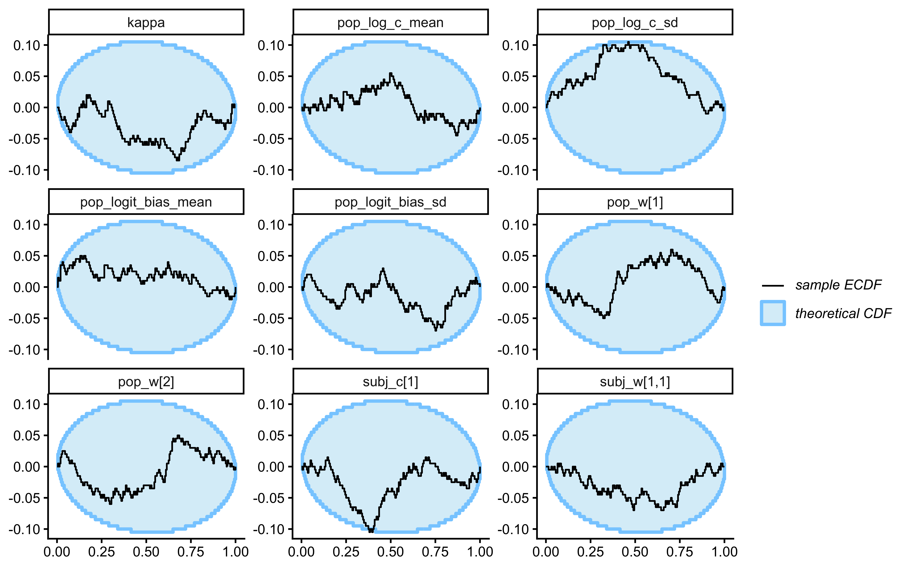
plot_rank_hist(sbc_results_ml)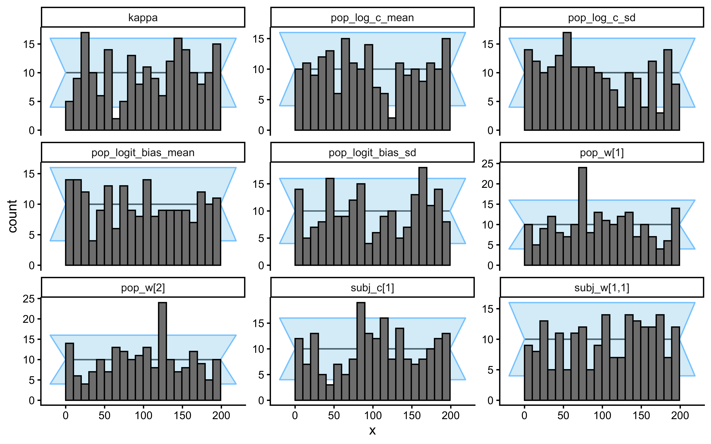
# ── Parameter recovery on Multilevel SBC simulations ───────────────────────
recovery_df_ml <- sbc_results_ml$stats |>
filter(variable %in% c("pop_log_c_mean", "pop_log_c_sd", "pop_w[1]",
"kappa", "pop_logit_bias_mean", "pop_logit_bias_sd"))
p_sbc_recovery_ml <- ggplot(recovery_df_ml, aes(x = simulated_value, y = mean)) +
geom_point(alpha = 0.5, color = "#0072B2") +
geom_abline(intercept = 0, slope = 1, color = "red", linetype = "dashed") +
facet_wrap(~variable, scales = "free") +
labs(
title = "Population Parameter Recovery Across SBC Simulations",
subtitle = "Posterior mean vs True generated value",
x = "True Value (simulated_value)",
y = "Estimated Value (Posterior Mean)"
) +
theme_bw()
print(p_sbc_recovery_ml)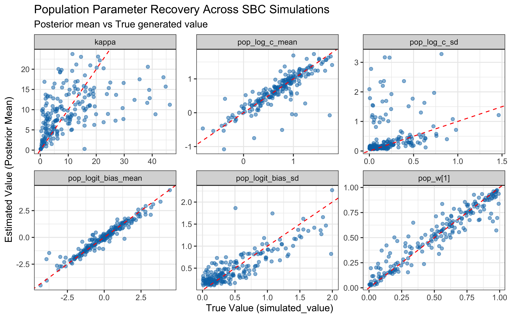
# ── Individual-Level Parameter Recovery on Multilevel SBC ────────────────────
recovery_df_indiv <- sbc_results_ml$stats |>
filter(variable %in% c("subj_c[1]", "subj_w[1,1]"))
p_sbc_recovery_indiv <- ggplot(recovery_df_indiv, aes(x = simulated_value, y = mean)) +
geom_point(alpha = 0.5, color = "#D55E00") +
geom_abline(intercept = 0, slope = 1, color = "grey30", linetype = "dashed") +
facet_wrap(~variable, scales = "free") +
scale_y_continuous(limits = function(x) c(x[1], min(15, x[2], na.rm = TRUE))) +
scale_x_continuous(limits = function(x) c(x[1], min(15, x[2], na.rm = TRUE))) +
labs(
title = "Individual Parameter Recovery (Subject 1) Across SBC",
subtitle = "Posterior mean vs True generated value",
x = "True Value (simulated_value)",
y = "Estimated Value (Posterior Mean)"
) +
theme_bw()
print(p_sbc_recovery_indiv)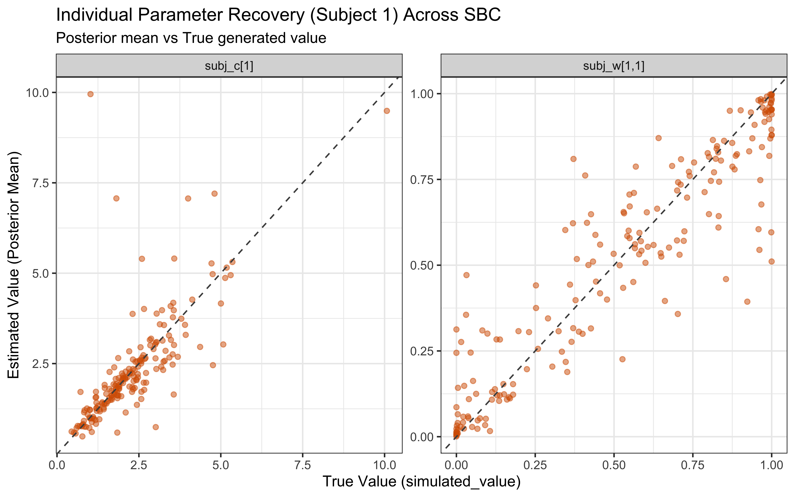
How to read the multilevel SBC. First, look at the ECDF and rank histograms. Pay special attention to the curves for pop_log_c_sd and pop_logit_bias_sd — these are the population scale parameters where the Non-Centered Parameterisation (NCP) can develop a reverse funnel. A U-shaped rank histogram means the posterior is overconfident. If that happens, the standard modeling prescription is to switch the affected parameter from a non-centred to a centred parameterisation. Second, look at the parameter recovery scatter plots. While the rank histograms tell us if our uncertainties (credible intervals) are statistically calibrated, the scatter plots tell us if the model is actually retrieving the correct data-generating parameters on average. Points falling neatly along the red dashed line (\(y = x\)) confirm that our multilevel architecture successfully recovers the group-level cognitive mechanisms.
12.4.5 GCM in Context: Strengths and Limitations
12.4.5.1 Strengths
- Empirical support: The GCM has successfully fit human categorization data across numerous experiments.
- Psychological plausibility: The model’s parameters correspond to psychologically meaningful constructs (attention, sensitivity/generalization, bias).
- Flexibility: It can account for a wide range of category structures and learning phenomena.
- Integration with memory: The model naturally connects categorization to memory for specific instances.
- Individual differences: The multilevel framework allows principled modeling of variations across people.
12.4.6 Limitations
- Memory requirements: Storing all exemplars becomes computationally demanding for large numbers of stimuli. How memory is bounded over long timescales is not fully specified.
- Conflation of generalisation and decisional precision: The standard GCM has no separate softmax temperature; sensitivity \(c\) doubles as a generalisation parameter and as a decisional precision parameter.
- Complex categories: The standard GCM struggles with categories defined by abstract rules, relations, or logical combinations of features.
- Sequential structure and LOO: Because the GCM is path-dependent, standard LOO-CV is technically invalid — but this chapter implements LFO-CV (Bürkner et al., 2020) as the canonical sequential-model cross-validation. The implementation is reused by Chapters 12, 13, and 15.
In the next two chapters we explore alternative approaches — prototype models (Ch. 12) and rule-based models (Ch. 13) — that address some of these limitations while introducing their own strengths and challenges.